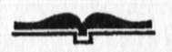

http://genclikcephesi.blogspot.com
http://genclikcephesi.blogspot.com
KASTAŞ Y A Y I N E V İ
SAVAŞ SANATI
•
Çinli filozof savaşçı SUN-TZU'nun günümüzden 2500 yıl önce yazdığı SAVAŞ SANATI isimli bu eserin 13 bölümden oluşan 384 SAVAŞ TEORİSİ
günümüze kadar tüm strateji uzmanlarının ve Harp Akademilerinin temel kaynak kitabı olmuştur.
"SAVAŞMADAN KAZANMAK" prensibini
ana doktrin olarak alan bu eser:
Taktik ve stratejik savaşlara yol gösterdiği kadar, günümüz ekonomik ve sanayi savaşlarına da kılavuzluk etmekte, EKONOMİST ve POLİTİKACILARA da yol göstermektedir.
http://genclikcephesi.blogspot.com
Thomas Cleary'nin 1910 basımlı
"The Art of War"
adlı eserinden
Adil Demir tarafından çevrilmiştir.
ISBN: 975-6544-36-8
Çeviri ©
ADIL DEMİR
Yayınlayan
KASTAŞ YAYINEVİ
Tel: 0212- 5205970
•
Kapak Tasarım
RENK AJANS
M. TANJU AK AD
Baskı & Cilt
KUŞAK OFSET
Himaye-i Etfal Sokak
Yıldırım İşhanı No:1-2-3
Cağaloğlu - istanbul
Tel: 0212-5274103
Üçüncü Baskı Mart 2008

SAVAŞ SANATI
S A V A Ş M A D A N K A Z A N M A K D O K T R İ N İ
E K O N O M İ S T V E P O L İ T İ K A C I L A R A Y O L G Ö S T E R E N E S E R
K A S T A Ş Y A Y I N E V İ
Himaye-i Etfal Sok. No: 6
Dr. Orhanbey İş Hanı Cağaloğlu - istanbul
Tel: 0212 520 59 70 Fax: 0212 511 36 68
E-mail: kastasyayinevi@gmail.com
SUNUŞ
SAVAŞ SANATI BARIŞIN KİTABIDIR
Bundan yaklaşık iki bin beş yüz yıl önce ünlü filozof savaşçı Sun Tzu tarafından yazılmış olan Savaş Sanatı (Sunzi bingfa) adlı bu eser, savaş stratejileri tarihinin en prestijli ve etkileyici eseridir. Savaş Sanatı'nın teorileri iki bin beşyüz yıldır tüm askeri lider ve strateji uzmanlarına kılavuzluk ettiği gibi bugün de gerek Asyalı idareci ve politikacılara gerekse modern işadamlarına yol göstermektedir.
Feodal toplumdan modern topluma neredeyse bir gecede geçme becerisini gösteren Japonya'da bilim adamları, Sun Tzu'nun klasik öğretilerini, modern çağın siyaset ve iş yaşamına büyük bir başarı ile uygulamışlardır. Ger
çekten de bugün pek çok kimse, Japonya'nın bugünkü ba
şarısında. Sun Tzu'nun ünlü Savaşmadan kazanmak en
büyük başarıdır,' doktrininin büyük rol oynadığı konusunda birleşmişlerdir.
Savaş Sanatı bugünün iş dünyası içindeki bitmek bilmeyen rekabet konusunda gerek kişisel, gerekse uluslararası çekişme ve mücadelenin ana hatlarına ışık tutar. Kitabın okurlarına verdiği ana fikir yenilmez olabilmek, savaşsız zafer kazanmak, savaş ve rekabetin fiziğinin, psikolojisinin ve politikasının doğru analizi ile rakiplere karşı üstünlük kazanmanın yollarının anlaşılmasıdır. Kitap büyük bir dikkatle okunarak değerlendirildiğinde bugünkü acımasız iş yaşamında hemen her zaman benzer koşullarla kar
şılaşılabileceği görülecek ve Sun Tzu'nun derslerinin pratik kullanımının uygulama becerisine sahip işadamlarına sağlayabileceği yararlar kolaylıkla bulunacaktır.
Bence. Savaş Sanatı sadece askerlerin ya da tarih öğrencileri ya da araştırmanlarının yararlanacağı bir kitap olmaktan çok bugünün dünyasındaki kullanım ve yararlanma alanını en çok iş dünyasındaki sınırsız savaş ortamında bulacak ve bu ikibinbeşyüz yıllık eseri okuyarak, doğru yorumlamayı becerecek akıllı iş adamlarının vaz ge
çilmez el kitabı olacaktır.
Sun Tzu'nun Savaş Sanatı incelendiğinde Doğu Asya'da, gerek psikolojinin, gerekse bilim ve teknolojinin temelini oluşturan Taoizm'den önemli ölçüde etkilendiği görülür. Hatta, bugünkü Uzak Doğu'ya özgü dövüş yöntemlerinin de Taoizm'den ve dolayısıyla Savaş Sanatı'ndan en azından esinlenmiş olacağını bize düşündürür. Bilindiği gibi Uzak Doğu dövüş yöntemleri de benzer felsefe içinde minimum güç kullanımı ile hasmına maksimum zarar vermeye, gereğinde geri çekilir gibi manevra yaparak düşmanı gafil avlamaya yöneliktir. Kitabımızın Savaş Sanatı bölümü tam anlamıyla okunduğunda bu savaş modelinin felsefesi daha iyi anlaşılacak ve Çin dövüş felsefesi olan 'savunma saldırısı' prensibi daha iyi anlaşılacaktır.
Çin tarihi boyunca Taoizm, insan düşünce ve davranışlarından dalgalanmaların belirleyici gücü olmuştur. Ya
şamın, birbiriyle sürekli çelişen güçlerin karışımı olduğunu öneren Taoizm, maddesel ve zihinsel gelişmeyi öne çıkarır, teknolojik gelişmeyi vurgularken aynı gelişmenin yaratacağı tehlikelere de dikkat çeker; sürekli olarak insanlığın maddi ve manevi yönlerinin dengelenmesine çabalar. Siyaset alanında da Taoizm aynı şekilde hem yönetenin, hem de yönetilenin yanında durarak zamanın ihtiyaçları çerçevesinde iktidarların oluşmasına ya da yıkılmasına destek olmuştur. Bu nedenle Tao düşüncesini yansıtmakta olan Savaş Sanatı, sadece savaşın değil aynı
zamanda barışın da kitabıdır.
ADİL DEMİR
İSTANBUL ŞİŞLİ
26 Ağustos 2001
6
İ Ç İ N D E K İ L E R
A- SAVAŞ SANATI BARIŞIN ANAHTARIDIR
Savaş Sanatı Ve Taoizm 9
Savaş Sanatının Yapısı ve içeriği 25
Tarihi Çerçeve 38
B- SAVAŞ SANATI
(Tam metin olarak 13 Bölüm 384 Madde)
Bölüm I Planlama (25 Madde) 43
Bölüm II Savaşın Maliyeti (19 Madde) 46
Bölüm III Savaşta Strateji (19 Madde) 49
Bölüm IV Taktik (20 Madde) 52
Bölüm V Enerji (23 Madde) 54
Bölüm VI Gücün Kullanımı (34 Madde) 57
Bölüm VII Savaşta Manevra (37 Madde) 61
Bölüm VIII Taktik Değiştirme (14 Madde) 64
Bölüm IX Ordunun ilerlemesi (45 Madde) 66
Bölüm X Arazı Faktörü (31 Madde) 70
Bölüm XI Arazide Dokuz Konum (68 Madde) 74
Bölüm XII Ateşle Saldırı (22 Madde) 81
Bölüm XIII Casusluk Ve istihbarat (27 Madde) 85
C- YORUMLARLA SAVAŞ SANATI
SAVAŞ SANATI YORUMCULARI 87
YORUMLARLA SAVAŞ SANATI 93-233
Kastaş Yayınları diğer savaş dizileri ve anılar 234-240
7
SAVAŞ SANATI VE TAOİZM
Eski bir Çin öyküsüne göre, bir zamanlar bir Çin soylusu, zamanının en ileri bilim adamlarından olarak kabul edilen üç kardeş otacıdan en gencine, aralarından en üstün olanın kim olduğunu sormuş.
Otacı cevap vermiş, "En büyük ağabeyim, hastalıkların ruhunu görüp, daha ortaya çıkmadan yok ettiği için, şöhreti evinin duvarlarından dışarı çıkmaz."
"Ortanca kardeşim, hastalıkları ortaya çıktığı anda yok eder, bu nedenle onun şöhreti de yaşadığı mahallenin dışına çıkmaz."
"Bana gelince, ben damarları açar, şuruplar hazırlar, masaj yaparım. Bu nedenle şöhretim her yere yayılır."
"Şimdi size sorarım hangimiz en üstün?"
Bu konu üzerine yorum yapan bir Ming dönemi bilgesi, "İşte, liderler, komutanlar ve ülkeyi yöneten tüm yöneticiler için bundan daha önemli bir kıstas bilmiyorum"
der.
Yaşlı otacının sözlerine paralellik gösteren Sun Tzu'nun felsefesi de, aynı şekilde elinden geldiğince çatışmayı gereksiz kılmaya yöneliktir. Büyük ustanın ünlü deyişi, "Düşman ordularını savaşmadan yenmek en büyük ustalıktır," bu düşünceyi yansıtan en büyük örnektir.
Yine aynı otacının söylediği gibi Sun Tzu'ya göre de, savaşmanın çeşitli seviyeleri vardır. En usta komutan, düşman tuzaklarını boşa çıkartır, ondan daha az deneyimlisi, düşmanın destekçilerini yok eder; daha sonra geleni, düşmanın askeri güçlerine saldırır; en kötü komutan ise surlarla çevrili kentleri kuşatmaya kalkar.
Öyküdeki en büyük kardeşin hastalıkları önceden tedavisi nedeniyle kimse tarafından tanınmaması örneğinde olduğu gibi, Sun Tzu da, eski çağlarda yaşamış en değerli savaşçı ve komutanların savaşları, aslında daha savaş
başlamadan önce kazanmış olmaları nedeniyle tarihçiler tarafından yeterince bilinmediklerinin, bu nedenle de tarih tarafından gerektiği kadar değerlerinin anlaşılarak, ödül-lendirilmediklerinin altını çizer.
Eldeki güçlerin minimum kullanımı ile m a k s i m u m ba
şarıya ulaşmayı amaçlayan Sun Tzu'nun Savaşmadan Kaz a n m a stratejisi, genel hatlarıyla Çin tarihinin popüler kültürlerini oluşturan Tedavi Sanatı ile Dövüş Sanatı'nın ilham kaynağı olan Taoist düşüncenin damgasını taşımaktadır.
Taoist düşüncenin Savaş Sanatı üzerindeki etkisi bilim adamlarınca yüzyıllardır incelenip yazılmakta ve Savaş
Sanatı stratejisinin klasikliği Taoizm felsefesinin gerek felsefi, gerekse siyasi çalışmalarında da kabul edilmektedir.
Bundan yaklaşık ikibin beşyüz yıl önce, Çin'in içinde bulunduğu iç ve dış savaşlar sürecinde yazılmış olan Savaş Sanatı da yine aynı d ö n e m d e doğan Tao Klasiği Tao-te Ching (Yol ve Güç) ile birlikte aynı Çin hümanizm akımının sosyal koşullarından esinlenmiştir. Savaş konusuna duygusal olmaktan çok akılcı bir yaklaşım gösteren Sun Tzu bizlere, savaşmanın nedenlerinin doğru anlaşılmasının savaş sorununu ne şekilde çözüme kavuşturabileceğini, hatta çatışmaların daha ortaya çıkmadan ne şekilde önlenebileceğine kılavuzluk etmektedir.
Bilim adamları, Taoist düşüncenin Savaş Sanatı üzerindeki etkilerini yüzyıllardır yazmakta, buna karşılık Taoist düşüncenin felsefi ve siyasal doktrinleri de Savaş Sanatı stratejisinin klasikliğini kabul etmektedir. Savaş Sanatı'nın önerdiği bilginin yüceliği, bu bilginin sağlayacağı Yenilmezlik Yeteneği ve bunun sonucunda gelecek, 'Savaştan Caydırıcılık' da Taoist deyiş olan,"derin bilgi ve güçlü davran ı ş ı n bir yansıması olarak kabul edilmektedir.
Savaş Sanatı'na göre, usta savaşçı çatışma psikolojisi ve mekanizmalarını öylesine iyi bilir ki, düşmanın her hareketini derhal algılayıp, her olasılığa u y g u n en doğal manevrayı en az güç kullanımı ile uygular.
Eski çağların Taoist çalışmalarından, Chung-ho chi (Denge ve Armoni Kitabı) Taoist bilginin ve pratiğin savaşçı üzerindeki etkisini aşağıdaki sözlerle tanımlar: Derin bilgi, sıkıntıyı sıkıntının oluşmasından önce.
tehlikeyi tehlikenin oluşmasından önce, yok olmayı yok olmadan önce, belayı bela gelmeden önce kestirebilmektir.
Güçlü davranış, beden tarafından zorlanmadan önce bedeni eğitmekte, zihin tarafından idare edilmeden önce zihni hazırlamakta, dünya tarafından yönetilmeden dünya üzerinde çalışmakta, görevlerin baskısı altında kalmadan görevleri yerine getirmektir Derin bilgi prensibi ile sıkıntıyı düzene, tehlikeyi güvene, yok olmayı varolmaya, belayı başarıya döndürebilmek mümkündür. Güçlü davranış ile beden uzun ya
şama, zihin ile derin düşünce yeteneğine, dünya barışa, görevler başarıya kavuşturulabilir
Bu sözlerin de tanımladığı gibi, Tao ya da Zen dü
şüncesini benimsemiş Asya'lı savaşçılar ulaştıkları derin soğukkanlılık erdemini sadece ölüm fikrine zihinlerini hazırlamakta değil, ama aynı zamanda karşılarına çıkacak her türden değişik koşullar altında, z a m a n yitirmeden anında tepki gösterecek hassaslığa ulaşmakta kullanırlar.
Yine Denge ve A r m o n i Kitabı der ki:
Sessizlik içinde kavramak, çabalamadan başarmak, görmeden bilmek bunların tümü Tao'nun duygu ve yanıtlarıdır. Sessizlik içinde kavramakla her şeyi anlamak, çabalamadan başarmak ile her şeyi başarabilmek, görmeden bilmek ile her şeyi bilebilmek mümkündür.
Hareket oluştuktan sonra hissedip anlamak, anlamak sayılmaz. Büyük çabalardan sonra başarmak, başarı sayılmaz. Gördükten sonra bilmek, bilmek sayılmaz. Bu üç durum hissetme ve karşılık vermekten uzaklaşmayı gösterir.
Gerçekten de olayları oluşmadan önleyebilmek, hissedebilmek ve görebilmek birbirlerine bağlı olarak geli-
ı 1
şen yeteneklerdir. Hiçbir şey anlaşılmadan hissedilemez.
karşılıksız hiç bir şey elde edilemez, hiç kimse fayda görmeyeceği bir yere gitmez Taoist düşüncenin amaçlarından biri de yaşamdaki çeşitli oluşumlara karşı en uygun hassaslığı ve karşılık verme yeteneğini geliştirmeye yardımcı olmaktır. Aynı akım altındaki Savaş Sanatı da öğrencilerine sayısız kaynak ve potansiyel sunar.
Aynı kavram içinde geliştirildiği düşünülen uzak doğu dövüş sanatı da yine Taoizm etkisi altında, MÖ.3.Yüzyılda yaşamış olan efsanevi Sarı imparator zamanına kadar geri gider. Efsaneye göre Sarı İmparator vahşi kabileleri, kendisine Taoist bir bilge tarafından öğretilen sihirli dövüş yöntemleri ile ele geçirir. Bu dövüş metodunun prensipleri de Sun Tzu'nun savaş bilimindeki bireysel savaş ve savunma tekniklerinin kaynağını oluşturur.
Sarı İmparator'dan bin yıl sonra, Çin'in içinde bulunduğu köle toplum modelini sona erdirerek Çin'e hümanist yönetim kavramını tanıştıran savaşçı komutanlar da Taoist düşüncenin bir diğer önemli klasik eseri olan, analitik ve düşünsel öğretilerin verildiği / Ching adlı eseri yazmışlardı.
/ Ching özellikle dövüş sanatları ve klasik sanat için yol gösterici olmuştu. / Ching'in temel prensipleri Sun Tzu'nun savaş yöntemlerinde öne çıkarak geleneksel Taoist eğitimin bireysel savunma ve savaş teknikleri temellerini meydana getirmişti.
/ Ching'ten sonraki en önemli Taoist belge Tao-te Ching'dir. Aynı Savaş Sanatı gibi M Ö . birinci binin ortalarında Çin'i mahveden iç savaşlar sırasında kaleme alınan Tao-te Ching de savaş kavramı konusunda Savaş Sanatı'na oldukça paralel bir yaklaşım gösterir. Savaşın kazananlar için bile yıkıcı olduğunu, çoğu z a m a n üretimi engellediğini, zorunlu kalınmadıkça savaştan kaçınılması gerektiğini vurgular.
Tao öğretilerine inanan bir lider, dünyayı silahla zorlamaya kalkmaz, çünkü bu tür zorlama aslına geri döner, ordunun bulunduğu yerde sadece çalılar biter, büyük savaşları bereketsiz yıllar takip eder
Silahlar uğursuz aletlerdir Silahtan başka çözüm kalmadığında bile soğukkanlı olmak, açgözlülükten kaçınmak, zaferi kutlamamak yapılacak en iyi şeydir Zaferi kutlayanların gözünü kan bürümüştür ve bu tür insanların dünyaya yararı olamaz
Benzer yaklaşım içindeki Savaş Sanatı da öfke ve açgözlülüğü yenilginin temel nedenleri olarak tanımlar. Sun Tzu'ya göre savaşı kazanan savaşçı, duygusallıktan uzak, soğukkanlı, kararlı savaşçıdır. Öfkeli, kızgın, öç alma pe
şinde olan savaşçı kaybetmeye mahkumdur. Tao-te Ching der ki;
Askerlikte başarılı olanlar askercilik yapmazlar, savaşta iyi olanlar kızmazlar, düşmanlarına karşı galip gelenler, düşmanlarına karşı herhangi bir duygu beslemezler.
Sun Tzu der ki; "Savunmada başarılı olanlar toprağın tüm derinliklerine saklanabilir, saldırıda başarılı olanlar ise göklerin en yüksek katmanlarında manevra yaparlar. Bu şekilde kendilerini koruyarak kesin zafere ulaşırlar."
Benzer yansımayı ticaret deyimlerinde de görebiliriz,
"iyi tüccar hazinelerini saklayarak hiçbir şeyi yokmuş gibi gösterir," ya da "İyi usta iz bırakmaz." Bu deyimler, Tao klasiğinin ve geleneksel uzak d o ğ u dövüş sanatının ilk öğrencileri olan Zen Budistlerince kendi sanatlarını ifade etmek amacıyla benimsenmiştir.
T a o Yasalarında siyasi örgütlenmenin gerek sivil gerekse askeri yönleri ile ilgili yazılar bulunmaktadır. Savaşan Eyaletlerin dramatik sonunu takiben iktidara gelen Han Hanedanı'nın başlarında yazıldığı bilinen ve Tao klasikleri arasında önemli bir yere sahip olan Huan Efendileri (Huai-nan-tzu) adlı kitapta bir tam bölüm Savaş Sanatı'nın temel öğelerini oluşturan Taoist savaş bilimine ayrılmıştır.
Savaş sanatında stratejinin anlaşılmazlığı en ö-
nemli unsurdur. Duruş belirsiz, hamleler öngörülemez olunca. hamleye hazırlık yapmak imkansızdır.
Bir komutanı savaşta yenilgiden uzak tutup, zafer kazandıran şey öngörülemeyen akılcılığı ile izi algılanamayan hareket tarzıdır
Yalnızca durumu bilinmeyene etki edilemez. Bilgeler öngörülmezlik pelerinine saklanır, böylece duyguları algılanamaz; belirsizlik içinde hareket ederler, o zaman yolları kesilemez.
Savaş Sanatı'nda Sun Tzu, "Olabildiğince gizlen, öyle ki görünmez ol. Olabildiğince gizemli ol, öyle ki sesin bile işitilmesin. O z a m a n düşmanının kaderi senin elindedir."
der.
Gerek Sun Tzu, gerekse Huan Efendileri bir araya gelerek çatışmanın ortaya çıkamayacağı, zaferin ise normal insanların gözüyle görülemeyeceği düşüncesindeki bir felsefi bakış üzerinde birleşirler. Sun Tzu'nun Savaş Sanatı gibi Huan Efendileri'nin stratejileri de, çatışmayı en son çare olarak ama yine de en katı kurallar altında, doğru bir liderlikle yapılması gereken bir operasyon olarak algılarlar.
Bir komutan kendi başına görmeli, bilmelidir Bunun anlamı, komutanın başkalarının göremediğini görmesi, başkalarının bilemediğini bitmesidir. Başkalarının göremediğini görmek parlak zeka. başkalarının bilemediğini bilmek üstün zekadır ilk kazanan parlak, üstün zekalılardır. Çünkü sadece onlar saldırılması olanaksız yerlerde savunma yapabilir, direnilmesi imkansız yerlere saldırabilirler.
Taoizm'in çok sıkı askeri kuralları ruhsal pratikle paralellik gösterir. Taoist öğreti ve eğitimde barış ve savaş
kavramları geniş bir çerçeve içinde kullanılır. / Ching adlı eserde de belirtildiği üzere Taoist uygulamanın ana prensiplerinden birisi, hem fiziksel hem de psikolojik anlamlar içeren, "boşluk ve doluluk" yönetimidir.
Savaş Sanatı'nda tam bir bölümün ayrıldığı boşluk ve doluluk yönetimi, Taoist dövüş sanatının fiziksel uygu-11
lamalarının kaynakçalarından olduğu gibi, askeri olsun sivil olsun hükümetlerin örgütsel ve sosyopolitik temellerini de oluşturur. Boşluk ve Doluluk anlayışını kesin başarının yolu olarak açıklayan Huan Efendileri düşüncelerini şu şekilde yansıtırlar:
Bu bir "Boşluk" ve "Doluluk" meselesidir Astlar ile üstler arasında ayrılık varsa, komutanlar ve subayları birbirlerine etki edemiyorsa, birliklerde tatminsizlik oluşmuşsa, buna "Boşluk" denir. Sivil Yönetim akıllı, askeri yönetim iyi, astlar ile üstler tek bir düşüncede, istek ve enerjilerini birleştirmişlerse buna "Doluluk" denir.
Becerikli lider halkını enerjiyle besleyerek , başkalarının "Boşluklarını da doldurabilirken; beceriksiz lider başkalarının "Doluluğu" önünde kendi halkının enerjisini boşaltır.
Adalet ve refah tüm halka ulaştığında, devlet çalışmaları ulusal krizlere çözüm olabildiğinde, göreve o pozisyona layık olanlar atandığında, planlama zayıf ve güçlü noktaları görebildiğinde, başarı kesindir.
Askeri güçlerin siyasal temelleri, ya da her örgüt ile ilgili sosyal temeller de / Ching adlı eserin öğretileri arasında yer alır. Savaş Sanatı'nda bu konuya özel önem verilmiş, kitabın ilk bölümü stratejik olarak rakiplere, etik değerlere, sosyal düzene, yönetimin popülaritesine ya da genel ahlaka ayrılmıştır. Sun Tzu'ya göre uygun koşullar altında kü
çük bir grup büyük bir gruba karşı galip gelebilir ve bu ko
şulları da adalet, düzen, dayanışma ile ahlak oluşturur. Bu husus da yine Huan Efendileri tarafından askeri strateji için vurgulanan önemli, öncü Çın düşünüşlerindendir.
Güç yalnızca geniş bir arazi ile büyük nüfus topluluğu değildir. Zafer sadece güçlü silahlarda değildir. Güvenlik sadece yüksek duvarlar ya da derin çukurlar meselesi değildir Otorite sadece kesin emirler ile katı cezalar değildir. Yaşayabilen bir örgüt kurabilenler sayıları az da olsa yaşayabilirler, oysa can çekişen toplumlar büyük olsalar bile yok olurlar Bu konu M Ö . Üçüncü yüzyılda yaşamış, Sun
Tzu'nun öğretilerini takip ederek büyük bir şöhrete ulaşan', eski Çin'in en ünlü askeri strateji uzmanlarından Zhuge Liang tarafından da vurgulanmıştı.
Askeri operasyonların Tao'su savaşçıların uyumunda yatar Asker arasında uyum olması halinde asker, üzerinde baskı olmasa da doğal olarak tüm gücüyle mücadele eder. Ama. askerle subaylar arasında itimat yoksa, savaşçılar kendilerini savaştan uzakta tutar: güven duyacakları emirleri duymayan asker gizli gizli konuşmaya ve eleştirmeye başlar. Orduda ikiyüzlülük çıktığında komutan eski bilge kralların tüm aklına bile sahip olsa, basit bir köylü sürüsünü bile yenebilmek olanaksız olur. Bu konuda eski bir atasözünü akıldan çıkarmamak gerekir." Askeri operasyon ateşe benzer: kontrolden çıkarsa kendini yakar, bitirir. "
Zhuge'nin dehası öylesine büyüktür ki, bütün yazıları, çizimleri ve kendisi hakkında yazılan her şey Taocu yasalarda yer alır.
Eski çağlarda iyi yöneticiler silahlanmadılar, iyi silahlananlar savaş hatları kurmadılar, iyi savaş hatları kuranlar savaşmadılar, iyi savaşanlar kaybetmediler, iyi kaybedenler ölmediler.
Bu sözler, savaşın en son çare olduğu düşüncesini, Tao-te Ching'in bir devamı olan Savaş Sanatı'nın ana fikri olan, savaşmadan kazanmak doktrini'ni vurgulamaktadır.
Zhuge Liang ayrıca Tao'nun klasik öğüdüne de büyük ö-
nem verir. "Silahlar kötü kehanetin araçlarıdır, bu nedenle kullanılması kaçınılmaz olmadıkça kullanılmamalıdır." A n cak Liang da Tao'nun tarihi tezi olan 'orijinal insanlık devrinin artık sona ermiş olduğu' düşüncesine katılmaktadır.
Liang da Sun Tzu gibi iç savaş sorununa eğilmiş ve bu nedenle çalışmaları daha çok ülkenin gerek siyasal gerekse askeri emniyetine yönelik pratik öğretilerle akılcı yaklaşımlar üzerine odaklanmıştır.
16
Askeri meselelerin yönetimi sınırlardaki ya da sınır bölgelerindeki sorunların yönetimindedir. Bu yönetim tarzı, otonte ve askeri cesaretle, direnenlerin ve asilerin yok edilerek vatanın korunması ve ülke barışının sağlanmasıdır.
Medeniyetin askeri hazırlığa ihtiyacının en büyük nedeni budur.
Hayvanların pençeleri ve dişlerinin amacı da budur Eğlenirken birbirleriyle oynayıp, kızdıklarında da birbirlerine saldırırlar. İnsanların pençeleri ya da dişleri yoktur, insan bu amaçla zırh ve silah kullanarak kendini savunur.
Ülkeler de yine bu amaçla ordular besler, hükümdarlar aynı amaçla bakanlar kullanır. Yardımcılar güçlüyse, ülke güvendedir, yardımcılar zayıfsa ülke tehlikededir.
Burada Zhuge, Sun Tzu'nun liderlik düşüncelerini takip etmektedir. Sun Tzu'ya göre hem sivil hem de askeri liderlik en fazla önem verilmesi gereken unsurlardandır.
Zhuge de, Sun Tzu ve Huan Efendileri'nin liderlik g ü c ü n ü n kişisel niteliklere ve popüler bilince bağlı olduğu düşüncesine katılmaktadır. Taoist düşünceye göre liderlik maddesel olduğu kadar ahlaki bir kavramdır; ahlaki gücün kendisini, hem insanın öz kontrolü hem de başkaları üzerindeki etkisi şeklinde gösterdiğine inanılır. Ulusal savunmanın gücü hakkında Zhuge şunları yazar:
Sonunda her şey komutanların askeri liderliğine olan güvene kalır Popüler olmayan bir komutandan ne ülkesine fayda gelir ne de ordusuna.
Bir karakter tahlili yöntemine göre, popüler olmayan k o m u t a n halkını inkar eden komutandır. Sun Tzu, gönül birliğini güçlü olmanın ana kaynağı olarak vurgular. Sun Tzu'nun minimalist savaş felsefesi, toplumun ortak ilgi alanı fikrinden beslenir. Zhuge Liang yine Tao-te Ching'den alıntı yaparak akıllı savaşçının toplumun tümüyle ilgilendiğini belirtir. "Silahlar kötü kehanetin araçlarıdır, bu nedenle kullanılması kaçınılmaz olmadıkça kullanılmamalıdır."
Zhuge, stratejisi olmayan savaştan ve gerekçesi olmayan çatışmadan kaçınma düşüncesi ile Savaş Sa-17
natı'nın yakın bir inanırı olduğunu gösterir. "Silah kullanmanın tek yolu, stratejisi önceden belirlenmiş operasyonlardır. Bulunduğun arazi ve iklim koşullarını dikkatle incele, halkının kalbine bak. Askerine teçhizatın kullanımı hakkında eğitim ver, ödül ve ceza yöntemlerinin açık olmasına özen göster, düşmanın stratejisini incele, yolunun üzerindeki tehlikeli geçitlere dikkat et, güvenli ve tehlikeli bölgeleri ayırt et, iki tarafın da koşullarını araştır, ne z a m a n ilerlemek ya da geri çekilmek gerektiğini iyi gör, koşulların zamanlamasına adapte ol, saldırı gücünü artırırken savunmanı kuvvetlendir, askerlerini yeteneklerine göre ödüllendir, zafer planları hazırla, ölüm ve yaşam meselesini göz önüne al. Ordunu, ancak tüm bunları yerine getirdikten sonra ve yalnızca tam güvene sahip komutanların komutası altında düşman üstüne gönderebilirsin."
Sun Tzu'nun Savaş Sanatı'na göre savaşta başarının anahtarı olan sürat ve koordinasyon sadece stratejik hazırlığa değil, liderliğin en büyük dayanağı olan psikolojik dayanışmaya da bağlıdır. Zhuge şöyle yazar: Komutan, ülkesi için yararlı bir araçtır. Önce stratejiyi belirleyip, sonra da uygulamayı yöneten komutanın komutası akıntı içinde yüzmeyi başaran bir dal gibidir.
Düşmanı ele geçirişi bir şahinin avına saldırışıdır. Sakinken gerili bir yay, harekete geçtiğinde çalışmaya başlayan bir makine gibi.durdurulmaya çalışıldığı yere girer, en güçlü düşman bile kendisine direnemez. Şayet komutanın görüşü yetersiz, askerleri hızlı değilse, üzerinde fikir birliği olmayan bir strateji, elinizde bir milyon kişilik bir ordu bile olsa düşmana gerekli korkuyu veremez.
Sun Tzu'nun klasik eserinden, 'başarılı stratejinin en büyük el kitabı' olarak bahseden Zhuge, askeri örgütlenme ile ilgili kendi düşüncelerini Savaş Sanatı'nın ana temalarını toparlayarak özetler. Görüşleri genellikle Taoist gelenekten kaynaklanan savaşçı eğitimi ve ruhu üzerinde odaklanır.
18
Size düşmanlık göstermeyenlere kötü düşünceler beslemeyin. Size karşı çıkmayana saldırmayın. Bir mühendisin verimliliği yalnızca bir uzmanın gözleriyle ölçülebilir. Savaş planları yalnızca Sun Tzu'nun stratejisi ile hazırlanabilir Sun Tzu'yu takip eden Zhuge, beklenmedik baskınların ve süratin d ü ş m a n ı n oyununu bozmaktaki avantajlarını vurgular.
Planlama gizli, saldırı çabuk olmalıdır. Ne zaman bir ordu aynı avını kapmak üzere dalmakta olan bir şahin gibi düşmanını ele geçirir, bendini kıran bir nehir gibi sava
şırsa, düşmanları onun önünde dağılıp gider. Buna ordu momentinin kullanımı denilir.
Daha önce de belirtildiği üzere Sun Tzu'nun Savaş
Sanatı'nın ana temalarından biri de objektif olmaktır. Eserinde, karşılaşılacak durumlarla ilgili nasıl tutkusuz kalınması gerektiğini öğretir. Z h u g e bu konuda da Sun Tzu ile aynı fikirdedir. Dikkatle hesaplanmış saldırının avantajlarını belirtir:
Savaşta usta asker sinirlenmeyen askerdir. Zaferde usta asker korkusuz askerdir. Bu nedenle akıllı olan savaşı önceden kazanır, oysa cahil asker kazanmak için savaşmak zorundadır
Burada Zhuge, Sun Tzu'nun, yetersiz planlamanın, güç ve adam kaybıyla sonuçlanan harekatların sonuçları hakkındaki uyarılarını aynen yazar.
Bir ülke gerekli malzemeyi yüksek fiyatla almak zorunda kaldığında tükenmiş, malzemelerini uzun mesafelere taşımak zorunda kaldığında fakirleşmiştir. Saldırılar tekrarlanmama!/, savaşlar çoğaltılmamalıdır. Güç, kapasiteyle orantılı bir şekilde kullanılmalı, aşırı kullanmanın gücü tükettiği unutulmamalıdır. Gereksizden kurtul, ülken bu şekilde barış dolacaktır. Rekabet edemeyenden kurtul, ülken bu şekilde kazançlı çıkacaktır.
19
Zhuge, son olarak Tao-te Ching'in, Sun Tzu'nun Savaş Sanatının ve Huan Efendileri'nin geleneğine uyarak zaferin anlaşılmaz olanın hakkı olduğunu yazar: Başarılı saldırı, düşmanın kendisini nasıl savunacağını bilemediği saldırıdır. Başarılı savunma, düşmanın nasıl saldıracağını bilemediği savunmadır. Bu nedenle savunmada başarı yüksek duvarlara bağlanamaz.
Bu nedenle yüksek duvarlar, derin su çukurları güvenliği garanti edemez. Sağlam zırhlar ve etkili silahlar da aynı şekilde güçlü olmayı garantileyemez. Düşman bir arada kalmayı tercih etmişse hazır olmadığı yerden saldır: düşman saldırı hattı kuruyorsa, seni hiç beklemediği yerde karşısına çık.
'Bilinmez olurken bilmek' fikri pek çok kere zaferin anahtarı olarak yinelenmektedir. Bu strateji Taocu düşünüşle Savaş Sanatı arasındaki en güçlü bağlardan birini oluşturmaktadır.
Taoist felsefenin öğretilerinin getirdiği pratik yönleri anlamak bize çelişkili gelebilecek bir ikilemi anlama olanağı sağlar. Sun Tzu'nun bir yandan savaşı lanetleyip bir yandan da savaş stratejileri öğretmesi bir çelişki olarak algılan a b i l i r e de bu konuya bir de Tao felsefesinin insan zekasına bakışı ile bakmak gereklidir.
Bir bakışın aynı anda birbirinden farklı açılardan değerlendirilmesi ünlü bir Taoist tekniktir. Çelişki ve ikilemler bu yöntemle çözüm bulur. Savaş Sanatı'nın ikilemine bir diğer örnek, Tao-te Ching'de yazılı acımasızlık ile iyiliğin Aklın Yolu olduğu temasında ortaya çıkar.
"Cennet ve cehennem insancıl değildir. Orada pek çok şey samandan kukla köpekler gibi kabul edilir. Bilgeler de insancıl değildir,onlar da halkı s a m a n köpek gibi kabul ederler."diye yazmıştır, Tao-te Ching'in ünlü filozofu. Batılı bir araştırman 1950lerdeki Kore Barış Anlaşması'nın hemen ardındaki günlerde bu yazıdan 'Canavarın geminden kurtulması' olarak bahsetmişse de, Taoistler açısından bu hiç de insanlık dışı olarak algılanmamış tam tersine Budist öğretide olduğu gibi bir objektiflik çalışması olduğu belirtilmiştir.
Modern akıma göre de bu tür bir düşünce bir psikolog ya da sosyologun, ülkelerin davranışları, düşünceleri ve beklentilerinin bağımsız akılcı kararların biraraya gelmesinden çok, çevresel faktörlerin etkisi altında, gerek bireysel gerekse toplumsal kontrolün ötesindeki değerlerden kaynaklandığı tezine benzer bir düşünceden öteye gidemez.
Sun Tzu'nun klasik eserinde de belirtildiği üzere Savaş Sanatı'nda belirtilen olgu kan dökücülükten çok toplum psikolojisinin gücünü anlamaya yöneliktir. İnsanların hangi türden duygularla yönlendirilebileceğini anlamak bu gücü kullanmayı arzulayanlar kadar bu güçten kaçınmak isteyenlere de büyük yarar sağlar.
Bu ışık altında bakıldığında Savaş Sanatı'nın silahlanmaya davetten çok koşullama üzerine bir çalışma olduğu görülür. Çatışmaların siyasal, psikolojik ve maddi faktörlerini bu şekilde tüm derinliğiyle analiz etmekteki Sun Tzu'nun mesleki amacı savaşı teşvik etmekten çok savaşın minimize ediierek kısa kesilmesini sağlamaktır.
Tao-te Ching bu konuda da Savaş Sanatı ile paralellik gösterir: Elimde tuttuğum ve ödüllendirdiğim üç hazinem var. Birisi şefkat, ikincisi tutumluluk, üçüncüsü ise başkaları üzerinde öncelik iddia etmemek. Şefkatten cesaret do
ğar, tutumluluk bize görüş sahası sağlar, başkaları üzerinde öncelik iddiasından kaçınma da yaşam güvenliği getirir. Şefkati, cesareti ve tutumluluğu bırakan, alçakgönüllülüğü terk ederek saldırganlığı tercih eden kısa zamanda yok olur. Savaşta şefkat zafere ulaştırır, savunmada şefkat ise güvenliği sağlar.
Klasik eserinde Sun Tzu Hoca askeri saldırıyı "durdurulmadıkça kendini yakacak bir ateşe" benzetir ve kendisine ait 'çatışmasız başarı' stratejisinin her zaman elde edilmesinin her ne kadar kolay değilse de 'üstün etkililik'
stratejisinin genellikle anlamsız vahşet ve yok olmayı minimize edebileceğini bizlere öğretir. Taoist düşünceye göre başarı çoğunlukla hiç bir şey y a p m a d a n kazanılır; Savaş
Sanatı stratejisi de neyin, ne z a m a n yapılmaması gerektiğini bilmenin, neyi, ne zaman yapmayı bilmek kadar önemli olduğunun altını çizer.
Egzotik uzak doğu savaş sanatının dikkat çekm e m e , bilinmez ve tutulmaz olma gibi niteliklerini içeren Hareketsizlik Sanatı, Taoism'in Varlık Bilimi'nden kaynaklanır. Yine uzak doğu dövüş ve kültür tekniklerini içeren Hareket Sanatı da Taoism'in Yaşam Bilimi'nden kaynaklanır. Varlık Bilimi genelde zihin ile ilgilenirken, Yaşam Bilimi enerji kullanımını içermektedir. Savaş Sanatı'nın tam anlamı bu iki kavramın dengesindedir.
Daha ileri çağlarda,bu konu hakkındaki belirleyici Taoist görüş Ming Hanedanı'nın (1368-1644) dört olağanüstü kitabından biri olan Batı Yolculuğu (Hsi-yu chi) ile ölümsüzlüğe kavuşmuştur. Batı Yolculuğu, Moğol saldırıları altındaki eski Çin'de Tao düşüncesinin önemli doktrinlerini hiçe sayarak, yaşam bilimini incelerken varlık bilimini ihmal etmenin, maddesel gelişmenin üzerinde dururken psikolojik gelişmenin ihmal edilmesinin ya da Sun Tzu nun öğretilerine göre zekasız güç sahibi olmanın ne gibi sonuçlar ürettiğine en güzel örneklerden biridir.
Bu kitaptaki baş kahraman karşılaştığı bir m a y m u n medeniyetinin başına geçen sihirli bir m a y m u n kraldır. Sonuçta maymun kral dünyayı karıştıran bir şeytanı yenerek, şeytanın kılıcını çalar.
Şeytan'ın kılıcı ile ülkesine geri döndüğünde, kılıç kullanmada ustalaşarak silahşor olur. Hatta ülkesindeki di
ğer maymunlara da oyuncak kılıçlar yaptırarak savaş
oyunları oynatır.
Ancak, ülkesinin komutanı olan bu savaşçı m a y m u n maalesef kendisini kontrol etmekte başarısız olur. Kafasında uyanan bir düşünceye kapılarak kendilerinin oyuncak silahlarla savaş oyunu oynamalarının k o m ş u ülkelerce ger-11
çek savaş çalışması olarak algılandığı düşüncesine kapılır ve bu sefer kendisi de gerçek bir silahlanma yarışına girişir.
Bu Onüçüncü Yüzyıl eseri ne kadar da g ü n ü m ü z ü yansıtıyor değil mi?
Öyküdeki m a y m u n kral elindeki gücü akılsızca kullanmayı, doğal düzeni bozarak ortalığı birbirine kattıktan sonra kendini yok edecek tuzağa kendi kendine düşmesini anlatır. Tuzağa düştüğünde ise içinde kaynaklanan dayanılmaz arzuyu yitirerek, varlık bilimini araştırmaya yönelir. Dikkatini akılcılık ve birleşmeye toplar.
Maymun'un düşüşü Buda ile karşılaştığında başlar.
Tao'cu din adamları kendisine içindeki yaratıkla savaşması gerektiğini söylerler ve Taoist eser I Ching'de belirtilen Ruh Simya Kazanında pişmesini öğütlerler, ancak m a y m u n kral bu gelişmeden kaçar.
Buda, m a y m u n u n gururunu kainatın karşı konulmaz görecelilik kanununu kendisine açıklayarak ele geçirir ve m a y m u n u beş element dağına hapsederek kibirinin sonuçlarından acı ç e k m e y e m a h k u m eder.
Beş yüzyıl sonra Budist tarihçi Kuan Yin yaptıklarından pişman olmuş m a y m u n u n yattığı hapishaneye giderek şunları yazar:
Ne kadar kötü ki sihirli maymun halkına hiç hizmet etmedi; Akılsız bir kahramanlık gösterişine kapıldı.
Çılgın bir yürekle çevresini yakıp yıkarak Ölümsüzlerin toplantısında;
Büyüklük tutkusunun kasırgasıyla egosunun peşine kapılıp Mutluluk cennetine koştu.
Yüzbinlerce askerin arasında,
Kendisine direnecek yoktu;
Gökyüzündeki en yüksek cennet katında
Ürkütücü bir varlıktı o.
Ancak ne zaman ki şaşırtıcı Buda ile karşılaştı, Merak ediyoruz, artık kim bilir ne zaman yeniden ortaya çıkarak aynı şeyleri yapmaya kalkabilecek?
2}
Şimdi m a y m u n artık serbest bırakılması için azizlere yalvarmaktadır. Azizler kendisini bir şartla serbest bırakacaklarını söylerler; artık tüm gücünü yalnızca aydınlanma peşine düşmekte kullanacaktır. Ancak bu aydınlanma sadece kendisi için değil tüm toplum için olacaktır. Son olarak aziz, maymunu uzun yoluna çıkmak üzere serbest bırakmadan önce bir tedbir alarak maymunun başına bir halka geçirir. Bu halka m a y m u n tutkuya kapılarak yanlış bir davranışa kalkıştığında başını sıkarak dayanılmaz bir acı verecektir.
Savaş Sanatı yüzlerce yıldır, stratejinin en önemli klasik eserlerinden biri olarak bilinmektedir. Ancak bizce bu eserin en önemli bilgeliği Sun Tzu'nun kendi eserini okuyan her savaşçının başına geçirdiği halkadadır. Tarih bu halkayı unutan savaşçıların başının nasıl bir sihirli güç tarafından sıkıldığını gösteren örneklerle doludur S A V A Ş S A N A T I N I N Y A P I S I V E İ Ç E R İ Ğ İ
Tao öğretilerinin felsefi ve siyasal etkisi altındaki Sun Tzu'nun Savaş Sanatı, Tao klasiği Tao-te Ching adındaki eserle bir başka açıdan da paralellik gösterir.
Her iki eserde de önerilen deyişler destan kahramanlarını andıran bir bilgenin ağzından söylenmektedir. Kitaplarda bir bilge bizlere seslenerek kendi öğretilerinin yerine getirilmesi halinde başarının, aksi taktirde ise başarısızlığın mutlak olduğunu söylemekte ve önerilerini tartışma kabul etmez bir üslup ile iletmektedir
Taocuların bir kısmı Tao-te Ching'in yazarı tarafından yaratılmayıp, daha çok eski deyişlerin derlenmesi ve bir araya getirilmesi şeklinde hazırlandığını ileri sürmüştür Aynı düşünce Savaş Sanatı için de öne sürülebilir. Sonuç olarak her iki eserin de benzer kaynaklardan esinlendiği fikri bugün bilim adamlarınca yaygın olarak kabul edilmektedir.
Savaş Sanatı'nın birinci bölümü Planlama'nın önemini vurgulamaya ayrılmıştır. I Ching'de de belirtildiği üzere, "Liderler herhangi bir şeyi yapmadan önce mutlaka planını hazırlar," ve "Liderler sorunları inceleyerek önlemini alırlar."
Savaş manevraları konusunda Savaş Sanatı her harekattan önce mutlaka göz önüne alınılması gereken beş
faktörden önemle bahseder: Uyum, hava, arazi, askeri liderlik ve disiplin faktörleri.
Bu bağlamda "Uyum" faktörü, sivil liderlikle daha d o ğ -
RUSU siyasal lider ile halk arasındak i iş birliği konusun a eği lir. Gerek Tao, gerekse Konfüçyüs'e göre dürüst bir hükümet Tao'nun "Uyum Yolu"na bağlı olmalıdır. Bu konuda savaşçı Sun Tzu, U y u m d a n "halkın liderle aynı hedefe yöneltilmesi" düşüncesi olarak söz etmektedir.
25
Hava faktörü, yani savaş için uygun mevsimin seçimi h e m orduyu oluşturan askerler hem de askeri destekleyen halkla ilgilenir. Buradaki ana konu halkın üretim gücünün d o ğ r u kullanımının sağlanmasıdır. Bu da savaş için doğru mevsimin seçilerek hem üretimin hem de savaş alanında ilerleyen ordunun mevsim faktörlerinden en az zararla çıkmasını sağlamaya verilen önemi gösterir.
Arazi Faktörü'ne gelince savaş esnasında geçilmesi gereken arazinin uzunluğu, arazideki engebeler, boyutlar ve güvenlik gibi faktörler mutlaka önceden öngörülerek, planlanmalıdır. Burada, yöreyi iyi tanıyan kılavuzların kullanımı en önemli unsur olarak ortaya çıkmaktadır. I Ching'de de "Avın kılavuzsuz takibi çalılıklarda biter,"denilerek bu husus bir kere daha vurgulanmıştır.
Askeri Liderlik hakkındaki Savaş Sanatı kriterleri yine h e m geleneksel Taoizm hem de Konfüçyanizm'ce de kabul gören ana değerlerdendir. Bu kriterler, zeka, güvenilir olma, insana önem verme, cesaret ve kararlılıktır. Budist bilgelere göre, "zekasız insancıllık, sahip olunan tarlanın sürülmemesine benzer. Cesaretsiz zeka, filizlerin ekili old u ğ u arazideki yabani otların temizlenmemesidir. İnsanı ihmal eden cesaret ise olgunlaşmış ürünü biçmesini bilmemektir."
Diğer iki değer olan güvenilir olmak ve kararlılık bir lidere emrindekilerin sadakatini ve itaatini kazandıran olgulardır.
Sözkonusu kriterlerden beşincisi olan disiplin, örgütsel dayanışma ile verimlilik konuları ile ilgilenir. Disiplin faktörü, kullandığı ana mekanizma olan ceza ve ödül sistemi ile, askeri liderlerde mutlaka aranılan temel niteliklerden güvenilirlik ve kararlılık ilkeleri ile doğrudan bağlantılıdır. Savaşçılar tarafından adil ve dengeli olarak kabul edilerek benimsenecek bir ödül ve ceza sisteminin kurulmasına büyük önem verilir.
Yine "Eyaletler Savaşı" sırasında bitmek bilmeyen savaşlara çözüm arayan düşünürlerin oluşturduğu Yasallık 2 6
Okulu da kişisel feodal yönetim sisteminin yerine akılcı örgütlenme ile hukukun önemini vurgulamıştır.
Bu bölümün ardından Savaş Sanatı aldatmacanın önemini ortaya koyar: "Askeri harekat aldatmacayı içerir.
Gücünüz varken kendinizi güçsüz gösterin. Etkiliyken etkisiz durun." Tao-te Ching'de de yazıldığı gibi, "En büyük ustalık zayıf ve beceriksiz gözükmektedir. "Savaşta maksimum verimliliğin ve zaferin yegane ilacı olan sürpriz faktörü karşı taraf hakkında tam bilgiye sahip olurken bilinmez olmaya bağlıdır; bu nedenle sır t u t m a ve düşmanı yanlış
yönlendirme becerileri ana sanatlardandır.
Genel olarak dişe-diş savaş akıllı savaşçı için ancak son çaredir. Sun Tzu'ya göre akıllı savaşçı her durum için hazırlıklı olmalı, ancak gerçekten zorunlu olmadıkça güçlü ve zorlu bir düşmanla karşı karşıya gelmekten kaçınmalıdır. Sun Tzu, d ü ş m a n a doğrudan saldırarak üstün gelmeye çalışmaktan çok, geri çekilme yöntemleriyle düşmanın kanatları arasındaki dengeyi bozmaya, düşmanın maneviyatı ile oynayarak düşmanın öfkesini, kızgınlığını kendisine karşı kullanmaya önem verir. Burada özet olarak büyük usta, Savaş Sanatı'nın üç büyük kriterini gözlerimizin önüne serer: Sosyal, psikolojik ve fiziksel faktörler.
Savaş Sanatı'nın ikinci bölümü genel olarak savaşın ülke ve halk üzerindeki etkilerine ayrılmıştır. Bu bölümdeki ana t e m a savaş esnasında süratin ve etkinliğin en önemli silah olduğu prensibidir. Özellikle uzak ülkelerdeki savaşların uzun sürmesinin ülke kaynakları üzerindeki olumsuz etkisi vurgulanarak bu tür uzun savaşlardan kaçınılması dersi öğretilir. Kaynakların, enerjinin tutumlu kullanılmasına büyük ö n e m verilmiştir. Savaşın ülke ve halkın üzerindeki maliyetini azaltmak amacıyla Sun T z u özkaynak kullanımı yerine d a h a çok akın edilen ülke kaynaklarının Kullanılmasını, ele geçirilecek d ü ş m a n esirlerinden m a k s i m u m oranda yararlanılmasını salık verir.
Ü ç ü n c ü bölümde, konu savaşta strateji'dir. Burada da en büyük ö n e m yine tasarrufa verilmiştir. Ana amaç, düş-
27
mana doğrudan doğruya saldırarak düşmanı yok etmeye çalışmak yerine düşmanı ve düşman kaynaklarını savaş
aldatmacaları kullanarak olabildiğince az zayiatla ele geçirerek, düşman kaynaklarından maksimum yararın sağlanmasıdır. Burada hedef özkaynakların tasarrufunda olduğu gibi düşman kaynaklarının da olabildiğince zarar g ö r m e d e n ele geçirilmesi prensibidir. Bu konuda Sun Tzu Usta bizlere ünlü doktrini, "En iyi zafer savaşmadan kazanılan zaferdir."deyişini öğretir Sun Tzu bu bölümde bizlere taktikler de gösterir. İlk olarak, ana amaç s a v a ş m a d a n kazanmak olduğu için Sun Tzu, en iyi yöntemin düşmanın planlarını baştan bozmak olduğunu, bu yapılamazsa düşmanı izole ederek zorda bırakmak gerektiğini öğretir. Usta bu konuda da zaman faktörünün önemine dikkat çeker,ancak süratin mutlaka acelecilikten ayrılması gerektiğinin ve hazırlıkların hakkı verilerek yapılması gerektiğinin de altını çizer. Kazanılacak zaferin kesin zafer olması gerektiğini vurgulayarak ancak bu d u rumda işgal kuvveti kullanma gibi bir masraf kapısından uzakta kalınabileceğini söyler.
Bölüm düşmanın gücü ile orantılı harekat stratejileri ile devam eaer. T e m e l prensip yine aynıdır: Güçlü düşmanla doğrudan savaştan olabildiğince uzak dur. Bu konuda I Ching'de de benzer şekilde,"Üstesinden gelinemeyecek koşullara direnmek kötü kader getirir." denilmiştir.
Aynı meyanda, strateji her ne kadar büyük oranda haber almaya bağlıysa da, savaş alanında karşılaşılabilecek de
ğişik konumlara karşı uyum göstermek gerekir. Yine I Ching'de bu hususun önemi,"geçilmezle karşılaştığında değiş, sen değiştiğinde geçilmez geçilir olur." deyişiyle belirtilmiştir.
Sun Tzu Usta, usta savaşçının ancak zaferi kesin olarak kazanacağını gördüğünde savaşacağı, düşüncesinden sonra bize zaferi garanti edecek beş yöntemden söz eder.Sun Tzu'ya göre zaferi kazanacak savaşçı ne z a m a n savaşacağını, ne z a m a n savaştan kaçınacağını bilen sa-2 S
vaşçıdır.Usta komutan ne z a m a n az, ne z a m a n büyük kuvvetle saldıracağını bilir, emrindeki asker ve subaylar fikir birliğine sahiptir, beklenmedik koşullara hazırdır, komutanları siyasal otoritenin g ü d ü m ü n d e değildir.
Bu son husus oldukça hassastır. Askeri liderliğe çok büyük ahlaki ve entellektüel sorumluluk yükler. Savaşlar hemen hemen hiçbir z a m a n askerler tarafından başlatılmaz, savaşı başlatan genellikle sivil hükümetlerdir. Sun Tzu işte böyle bir d u r u m d a elindeki askeri güçleri tanımayan, değerlendiremeyen bir siyasal yönetimin askeri yönetime müdahale etmesinin, "askeri dengeleri bozarak zafere engel olduğu,"gerçeğini anlatır.
Bu konuda da ana mesele bilgidedir. Sivil yönetimin savaş alanındaki orduya müdahale etmemesi gerektiği dü
şüncesi zafere giden yoldaki en önemli silah olarak kabul edilen, elde edilecek bilginin en kısa z a m a n biriminde de
ğerlendirilmesi gerekliliğinden kaynaklanır. Hangi tarafın kazanacağını belirleyen bu beş yöntemi değerlendiren Sun Tzu bizlere, "Kendinizi ve karşınızdakini iyi tanıyorsanız sizin için tehlike yoktur, kendinizi iyi bilmenize r a ğ m e n karşınızdakini yeterince tanımıyorsanız yine de kazanma şansınız vardır, ancak ne kendinizi ne de karşınızdaki bilmiyorsanız o z a m a n her savaşta tehlike ile karşı karşıyasınız demektir."der.
Savaş Sanatı'nın dördüncü bölümü savaş stratejisinin en önemli unsurlarından biri olan taktik konusuna ayrılmıştır. Yine Taoist bir yaklaşımla Sun Tzu burada zaferin anahtarının değişik koşullara uyumda ve anlaşılmaz olmakta olduğunu öğretir Sun Tzu yorumcularından Du Mu bu hususu, "şekilsiz bir varlık anlaşılamaz, oysa belirli bir konumda olanı anlamak kolaydır. Anlaşılamayan kazanırken, anlaşılır olan kaybedecektir." sözleriyle belirtir.
Anlaşılmaz olmayı pasif kalmaktan ayırmak gerekir.
Anlaşılmazlık geri çekilmek ya da saklanmak değildir. Burada önemli olan başkalarının göremediklerini görmek, düşmana kendini göstermemeyi becermektir. Burada yöntem yine aldatmacalardadır. Fırsatları düşmandan önce görerek, hızlı hareket etmek, özellikle bilinir düşmana karşı büyük avantaj doğurur.
Bu düşünceyi takiben Sun Tzu, kesin zaferin yolunun ne z a m a n hareket edileceği ya da hareketsiz kalınacağının iyi bilinmesinde olduğunu bir daha vurgular. "Kendinizi yenilmez yapın," der,"Ve düşmanınıza yalnızca zayıf olduğu anda yüklenin. Unutmayın ki, iyi savaşçılar yenilmelerinin olanaksız olduğu yerlerde konuşlanırlar." Sun Tzu bu bölümde ordu içi örgütlenmenin, disiplin ve ahlakın bir daha önemini vurgular.
Savaş Sanatı'nın beşinci bölümünün konusu
Enerji'dir. Enerji'den kastedilen savaş alanında Güç, ya da Moment'in kullanımıdır. Burada vurgulanan Moment, hareket halindeki ordunun dinamizmini simgelemektedir. Sun Tzu, bize örgütlenme becerisi ile koordinasyonun öneminin yanı sıra geleneksel savaş yöntemlerinin ve gerilla savaşının bir arada kullanımından bahseder. Savaşta manevra değişikliği ve sürprizin altını çizerek sonsuz sayıda taktik değişikliğin kullanılması gerektiğini, düşmanın psikolojik koşullarını etkileyerek düşmanı kolayca vurulabileceği konuma getirmenin yararlarını öne çıkarır.
Sun Tzu'nun "Enerji" konusundaki öğretilerinin ana teması örgüt içi dayanışma ve birlikteliktir. Bu sayede bireysel yeteneklere bağlı olma zorunluluğu yerine örgütün yani ordunun t ü m ü n ü n oluşturacağı "Güç"ün momenti öne çıkacaktır. "İyi komutanlar savaş alanında bireylerden değil ordunun momentinden sonuç ararlar."
Tzu'nun birlikten kaynaklanan güce ve bu gücün iç çekişmeleri sona erdirerek birliktelik sağlamasına verdiği bu özel önem kendisini ve eserini bugün dövüş sanatı tüm dünyaca bilinen Japonların eski çağlardaki tarihi bireysel savaşçıları olan Samuray'lardan ayıran en büyük özelliktir.
Sun Tzu'nun Savaş Sanatı'nın gerek m o d e m Asya'da gerekse tüm dünyada bu kadar yararlı bulunmasındaki temel neden, birliktelik içindeki "Moment'e verdiği önemdedir.
30
Kitabın altıncı bölümü,"Boşluk ve Doluluk" kavramlarını öne çıkaran G ü c ü n Kullanımı k o n u s u n a ayrılmıştır. Bu kavramlar yüzyıllardır Taoist savaş yönteminin temellerini oluşturmaktadır. A n a fikir d ü ş m a n ı n enerjisini tüketirken kendi enerjini koruma becerisidir. Bu beceri bize, düşmanın zayıf düştüğü anda saldırma kapasitesi vererek bizi yenilmez yapar. Bu taktiklerin en basitlerinden biri bugün yalnız savaşta değil bugünün hem sosyal h e m de iş manevralarında yaygın olarak kullanılmaktadır. "İyi savaşçılar düşmanının ayağına gitmezler, d ü ş m a n ı n kendi ayaklarına gelmesini sağlarlar."
Kendi enerjini korurken düşmanının enerjisini tüketme becerisi bilinmez olmanın bir diğer fonksiyonudur.
Sun Tzu'nun sözleriyle, "Bir ordunun yapısının kuruluşundaki mükemmellik ordunun yapısız olması ile tamamlanır.
O zaman kimse karşınıza bir strateji ile çıkamaz." Sun Tzu ayrıca düşmanlarımızın kendi güçlerini belirli bir yapıya getirmesine düşmanı teşvik etmemizi , d ü ş m a n güçlerinin yapısını ve d ü ş m a n reaksiyonlarını belirli aralarla sürekli test etmemizi, ancak kendi güçlerimizin gerçek durumunu düşmandan saklamamızı öğütler.
Bu belirli bir düzende olmayış ve akışkanlık yalnızca bir savunma ve sürpriz aracı olmayıp, potansiyel enerjiyi elde tutmanın dinamik bir aracıdır. Sun Tzu Usta başarılı bir orduyu akan suya benzetir, bilindiği gibi suyun da belirli bir şekli olmamasına karşın Tao-te Ching'de de belirtildiği üzere su, zayıf sanılan yapısının tam tersine karşısına çıkan her engeli aşmasını, aşındırmasını, yıpratmasını bilir.
Sun Tzu'nun şu sözlerine kulak verelim:" Askeri bir birliğin belli bir kalıbı olamaz. Suyun da belli bir kalıbı yoktur. Zaferi kazanma yeteneği d ü ş m a n a göre değişim göstermek ve koşullara adaptasyondan geçer. Buna deha denir."
Savaş Sanatı'nın yedinci bölümü silahlı çatışma ile ilgili olup ordunun savaş alanındaki düzeni ile savaş manevraları hakkında Sun Tzu'nun görüşlerini özetler. Haberalma ve ön hazırlığın önemini anlatarak konuya giren Sun Tzu, 31
"Hesabını yaptıktan sonra harekete geç. Uzağı ve yakını ilk gören kazanır; silahlı savaşın kuralı budur." der. Aynı konu hakkında I Ching'e baktığımızda da benzer şekilde,"Hazır ol. O z a m a n şans yanındadır." der.
Her zamanki karakteristik özelliği olan minimalist / te-melci görüşünü Sun Tzu şu sözlerle bir kere daha tekrarlar:
"Düşmanın enerjisini tüketin, d ü ş m a n komutanlarının yüre
ğini kopartın." Doluluk ve boşluk prensiplerinden maksim u m yararlanma yöntemini de, "İstekli düşmandan uzakta dur; sendeleyen ve kaçana saldır," sözleriyle vurgular. Esrarengiz kalma becerisine sahip olacak savaşçı için Doluluk ve Boşluk prensibine yönelik dört ustalığın varlığını anlatır: Enerji Ustalığı, Yürek Ustalığı, Güç Ustalığı ve Uyumluluk Ustalığı.
Savaş Sanatı'nın sekizinci bölümü savaş ustalığının köşe taşlarından biri olan Taktik Değiştirme ya da Uyumluluk konusuna ayrılmıştır. Sun Tzu Usta bu konuda, "komutanlar karşılarına çıkan koşullara uyum sağlayarak avantaj yaratma yeteneğine sahip değillerse, bulundukları arazinin yapısını ezbere bilseler bile bundan yararlanamayacaklardır." demektedir. Bu hususta I Ching'de, "anlayışının çok ötesine çabala, bu uğurdaki çaban seni felakete götürecektir." diyerek komutanların içinde bulundukları ko
şullara uyum sağlamak yerine kendi önyargılarının peşine düşmelerinin kendilerine felaketten başka kader getirmeyeceğini ifade etmektedir.
Taktik değiştirme konusu doğal olarak Savaş Sanatı'nın bir diğer önemli niteliği olan hazır olmaya bağlıdır.
Sun Tzu Usta bu konuyu, "askeri operasyonlarda kural, düşmanın üzerimize gelmeyeceğini ummaktan çok, gelen düşmanı karşılamaya hazırlıklı olmak; düşmanın saldırmayacağını düşünmekten çok, düşmanın saldıramayacağı k o n u m d a bulunmaktır." Tao'cu I Ching'de de bu konu ile ilgili olarak, "yapınızı sağlamlaştırmadan üzerinize aşırı saldırı alacak olursanız, gücünüzü tüketirsiniz." diyerek karşı-
miza çıkacak düşmanla karşılaşmaya sürekli olarak hazır olmanın önemi belirtilmektedir.
Savaş Sanatı'na göre hazır olmak yalnızca malzeme hazırlığı anlamında sınırlı kalmaz. Zihinsel hazırlığı olmayan fiziksel güç, zaferi garanti etmek için yeterli olamaz.
Sun Tzu bu konuda da zafere yönelik liderin psikolojik boyutlarına bakarken beş tehlikeye dikkat çeker.Bunlar, ölüm için aşırı istekli olmak, yaşamak için aşırı istekli olmak, aşırı öfke, aşırı sofuluk, aşırı duygusallıktır.Bu aşırılıkların her birisi, kendi başına akıllı bir d ü ş m a n tarafından kullanabilecek zaaflar haline gelebilir.
Dokuzuncu bölüm orduların ilerlemesi üzerine yazılmıştır. Sun Tzu Usta bu konuda da savaş sanatının üç açısı üzerinde durmuştur Bunlar, fiziksel, sosyal ve psikolojik açılardır. Fiziksel açıdan ilk olarak üzerinde konuşlanılacak arazinin belirgin özel noktalarına dikkat çekerek, özellikle arazideki yüksek noktaların, nehir yukarı pozisyonların, tepelerin güneşli yamaçların, doğal kaynakların bol olduğu yörelerin önemini vurgular. T ü m bu boyutlara bakarken bir yandan da d ü ş m a n hareketlerinin çeşitleri üzerine yorumlar getirir.
Her ne kadar Sun Tzu hiçbir zaman maddi gücün ya da sayısal üstünlüğün inkar edicisi konumunda bulunmamışsa da, sosyal ve psikolojik faktör ve etkilerin fiziksel g ü cün karşısında başarılı olabileceğinin de üzerinde önemle durur. "Askeri konularda sayısal üstünlük her z a m a n yararlı olmayabilir, önemli olan aşırı saldırganlıktan arınarak, g ü cünü konsantre etmek, düşmanın gücünü tam kestirerek, halkı yanına çekmeyi başarmaktır." Grup çalışmasını destekleyen bir başka Savaş Sanatı deyişi de şöyle yazılmıştır:
"Stratejisi olmadan düşmanını hafife alan bireysel savaşçı düşmana esir düşmekten kendini Kurtaramaz."
Dayanışma, liderle takipçileri arasında karşılıklı anlayış ve ilgi gerektirir. Bunun gerçekleşmesi de büyük ölçüde tahsil ve eğitime bağlıdır. Konfüçyüs Okulu bilgelerinden Mencius bu konuda, "Askerini eğitmeden d ü ş m a n üstüne gönderen komutan onları perişan eden komutandır."der.
Sun Tzu da, "Emrindekileri kültüre yönlendir, savaş sanatı ile birleştir; bu sana zafer getirecektir." diyerek eğitim ve kültürün zafer üzerindeki önemine dikkat çekmektedir.
O n u n c u Bölüm arazi konusuna eğilir. Bu bölümde de ana ilgi alanı taktik manevra ve uyumluluk üzerinedir. Arazi türleri ayrı ayrı incelenerek, hangi tür arazide nasıl bir hareket tarzı takip edilmesi gereği irdelenir. Arazi tipleri ile ilgili yöntemlerin diğer konulara yansıtılması üzerinde d ü
şünmeye ihtiyaç gösterir. Ancak, bu meseledeki temel husus komuta edecek kişinin maddi, sosyal ve psikolojik çevre ile ilişkilerinin değerlendirilmesindedir.
Sun Tzu, burada ayrıca liderliğin sorumlu olduğu ölümcül organizasyon hatalarından söz eder. Ana ilgi yine birlikteliğin moral üzerine olan etkileridir:"Askerlerine kendi çocukların gibi bak, o z a m a n senin uğruna ölüme seve seve atılacaklardır." der. Sun Tzu bu arada askerlere sevgide aşırıya kaçılmaması gerektiğini, aksi taktirde askerlerin kolayca haşarı çocuklara dönüşebileceğini de uyarmadan edemez.
Bu bölümde önceden bilgi toplama anlamına gelen haber alma konusu da işlenmektedir. Haber almadan genel olarak hem düşmanın hem de kendi güçlerinin durumunu öğrenme, düşmanın zayıf noktalarını anlamak ile arazi e n gebe ve konumlarını öğrenmek kastedilmektedir. Sun Tzu:
"Kendini ve düşmanını iyi tanıyorsan zafer senin için asla tehlikede değildir. Gökyüzü ile yeryüzünü iyi biliyorsan senin için zafer asla tükenmez." diyerek çevre koşullarını ve düşmanını iyi bilmenin zafere giden yolu açtığını ya da zafere giden yolun haber almadan geçtiğini bizlere anlatır.
Aynı konuda I Ching'de de, "Başlangıçta iyi hazırlan ki sonunda Daşına dert gelmesin." denilmektedir.
Onbirinci bölüm, Arazide Dokuz Konum olarak
adlandırılmıştır. Bu bölümde arazi iyice detaylandırılarak arazinin yalın konumundan çok sosyal k o n u m u ile bu sosyal çevre içinde hangi konumda hangi hareket tarzının se-34
içinde hangi konumda hangi hareket tarzının seçilmesi g e rektiğine yönelik öğütler bulunmaktadır.
S u n Tzu Usta tarafından bu d o k u z arazi, (a) Çatışmalı Arazi
(b) Yakın Arazi
(c) İhtilaflı Arazi
(d) Açık Arazi
(e) Anahtar Arazi
(f) Ciddi Arazi
(g) Zor Arazi
(h) Kuşatılmış Arazi
( i ) ö l ü m c ü l Arazi"
olarak adlandırılmıştır.
"Çatışmalı Arazi", genel olarak üzerinde ölümcül savaş ya da sivil çatışmaların gerçekleştiği arazilere denilmektedir. "Yakın Arazi" birbirine bitişik d ü ş m a n arazi par
çalarına denilirken, "İhtilaflı Arazi", çekişme halinde eline geçiren tarafa avantaj sağlayan arazilere.verilen isimdir.
"Açık Arazi", her iki tarafın da rahatlıkla girebildiği arazilerdir. "Anahtar Arazi"den anlaşılan, iletişim için kilit görevi g ö ren arazilerdir. "Ciddi Arazi", "Yakın Arazi"nin tam tersine d ü ş m a n ülkelerin birbirlerinin derinliklerinde bulunan arazi dilimleridir. "Zor Arazi", girilmesi zor olan ya da girmiş olmanın hiçbir fayda sağlamadığı arazi parçalarına denilir.
"Kuşatılmış Araziler"e giriş olanakları son derecede dar olup, bu tür arazilerin en önemli özelliği pusuya çok uygun olmalarıdır. "Ölümcül Arazi", üzerinde bulunulduğunda hem e n savaşa girişmek ya da yok olmak seçeneklerinden birinin seçilmesini mecbur e d e n arazi türlerine denilmektedir.
Tanımını yaptığı her arazi türü için uygun taktikleri anlatan Sun Tzu, çatışma taktiklerine, içinde bulunulan arazi yapısının asker üzerindeki sosyal ve psikolojik faktörlerini de ekleyerek araziye uyumun önemini vurgul a r . F a r k l ı arazi türlerine uyum, ricat ya da ilerlemenin avantajları, insan duyguları ve koşullar - tüm bunlar mutlaka incelenmelidir."
35
Savaş Sanatı'nın onikinci bölümünde incelenen konu saldırıda ateşin kullanımı üzerinedir. Bu konu, çeşitli kundakçılık yöntemleri ile kundaklama sonrasına yönelik teknik hazırlıklar ve stratejilerin kısaca incelenmesi ile başlar.
"Ateş"in Sun Tzu'nun yaşadığı çağdaki en ölümcül silahlardan biri olması nedeniyle Büyük Hoca bu bölümde insanlık için en duygusal dileklerinden birini dile getirir .
"Silahlar ancak başka çare kalmadıkça kullanılması gereken felaket araçlarıdır." Kundaklama konusundaki sözlerini kendisinden beklenmeyen bir çabuklukla sona erdiren Sun Tzu Hoca, "Hiçbir hükümet kızgınlık içinde ordusunu sevk etmemeli, askeri liderler gazap içinde savaş kışkırtmacılığı yapmamalı."diyerek savaş ve sonuçlarının son derecede dikkate alınması gerektiğini olanca açıklığı ile vurgulamıştır "Yalnız, sonunda sana yararı olacağını görüyorsan harekete geç, aksi taktirde hareketten vazgeç. Öfke ne
şeye, gazap sevince dönüşebilir, ancak yok olmuş bir ülke varlığına bir daha asla kavuşamaz, ölüler yeniden canlanamaz."
Sun Tzu, Savaş Sanatı'nın onüçüncü ve son bölüm ü n ü casusluğa ayırarak kitabın birinci bölümünde altı çizilen strateji konusu ve strateji için en büyük gereksinim olan haber almaya geri dönmüş bu dönüşüyle de kitabı b ü -
tünleştirmiştir. Bu bölümde kendisine özgü verimlilik hedefli minimalist öğretim tarzına uygun olarak haber alma görevlileri olan casusların önemini anlatmaya başlar." Askeri hareketler bir ülke için sonu olmayan tüketim kaynakları olup, bir günlük zafer için yıllarca mücadele edilir. Bu nedenle ödül vermekten kaçınarak, düşmanın durumunu ö ğ r e n m e mizi sağlayacak bilgileri edinmekteki başarısızlık tümüyle insanlık dışıdır."
Sun Tzu, casusları ya da gizli ajanları beş kategoriye ayırır. Operasyonların gerçekleşeceği bölgedeki insanlar arasından tutulacak casuslara "Mahalli Casus" adını verir.
Düşman içindeki muhalif görevliler arasından görevlendirilen casuslara "İç Casus"; yakalanan düşman casuslarının 36
iki taraflı çalıştırılmaları yöntemi ile yaratılan casuslara ise
"Devşirme Casus" denilir. Gerçek olmayan bilgileri düşmana sızdırmak amacıyla gönderilen casuslara da "Ölü Casus" adını vermiştir. "Yaşayan Casus" adı ise edindiği bilgilerle gelip geri dönen casuslara verilen isimdir.
Sun Tzu'nun liderlik açısından "Casusluk" konusunun pratikteki karmaşıklığına bakışında her z a m a n olduğu gibi sosyal ve psikolojik faktörlere büyük ö n e m verilmiştir. Savaş Sanatı, casusların kullanımındaki başarının bir liderlik meselesi olduğunu söyleyerek sona erer. S u n Tzu bu d ü
şüncesini, "Casuslar, akılcılık ve bilgi olmaksızın, insanlık ve adalet gösterilmeksizin kullanılamaz; casuslardan ger
çek bilgi kurnazlık olmaksızın alınamaz." diye açıklar ve,
"yalnızca casusluğu çok iyi kullanma hünerini gösteren parlak bir h ü k ü m d a r ya da akıllı bir k o m u t a n zaferden emin olabilir" diyerek son kararını bildirir.
37
T A R İ H İ Ç E R Ç E V E
Savaş Sanatı'nın eski Çin'de M.Ö. beşinci ve üçüncü yüzyıllar arasındaki "Savaşan Eyaletler" döneminde yazıldığı bilinmektedir. Bu d ö n e m yaklaşık beşyüz yıl önce I Ching adlı ünlü eseri kaleme almış olan bilgeler tarafından kurulmuş, Çin tarihinde Chou hanedanı olarak bilinen hanedanın parçalanma dönemidir. Hanedanın çöküşü sonrasında ortaya çıkan otorite boşluğu eyaletler arasındaki ilişkilerin bozulması ile sonuçlanınca hanedanı ele geçirmek için harekete geçen eyaletler arasında sona ermek bilmeyen bir çatışma başlamıştır.
Bu dönemde yazılmış eserler arasında en önemli olanlarından Savaşan Eyaletlerin Stratejisi anlamındaki
"Zhanguo cel Chan kuo ts"e adlı eserde d ö n e m e ait siyasi ve askeri ilişkilerin anlatıldığı bir dizi öykü içinde Savaşan Eyaletler döneminin bir çeşit grafik anlatımı bulunmakta ve bizlere o dönemi yansıtmaktadır.
Gaspçılar kendilerini lord ya da kral ilan ettiler; düzenbazlar ya da komplocular kendilerini süper güç yapacak ordular kurdular. Her birisi diğerinin yaptığını artırarak taklit edip sonsuz bir yarışa giriştiler. Sonunda birbirlerini tuzaklara düşürerek kanlı meydanlarda yok ettiler; yıllar boyu süren sert çatışmalar sonucunda büyük eyaletler için çarpışıp küçük eyaletleri ellerine geçirdiler. Bu kan davası süresince babalar ile oğulları bile birbirlerine karşı çıktılar, kardeşler birbirine güvenmezken karılar, kocalar birbirlerinden ayrı düştüler. Kimse için güvencenin kalmadığı bir odam oluştu. Değerler odadan yok oldu. Yıllar geçtikçe bu durum her geçen gün daha kötüleşti,. odada birbirleriyle durmaksızın savaşan yedi büyük ,beş küçük eyalet kaldı.
Bunun tek nedeni bu eyaletlerin sınırsız açgözlülüğü ve öne çıkma konusundaki olağanüstü hırslarıydı.
38
"Savaşan Eyaletler" d ö n e m i n i n h e m e n arifesinde yaşamış bulunan büyük hümanist, filozof ve eğitmen Konfüçyüs yaşamını, ülkesini yüzyıllar boyu sürecek iç çekişmeye sürükleyen insan değerlerindeki yıpranmanın nedenlerini anlamaya vakfetmişti. Konfüçyüs'ün klasik eseri
"Seçmeler"'de, "Savaşan Eyaletler" dönemi, Konfüçyüs'ün öğütler verdiği bir hükümdarla karşılaşması ile canlandırılır.
W e i Hanedanı'nın hükümdarı W e i , Konfüçyüs'ten savaş
düzenleri konusunda yardım ister. Konfüçyüs kendisine
"Dini konuların düzeni hakkında bilgim var, ancak askeri meseleler hakkında hiçbir ç a l ı ş m a m yok." diyerek ertesi gün hükümdarı terk eder.
Hükümdarın yüzyıllar boyu düşüncelerinden insanlık kavramını çıkartmalarını anlatan bu öykü M Ö . d ö r d ü n c ü ve üçüncü yüzyıllarda, Savaşan Eyaletler döneminin tam ortasında yaşamış olan Taoist filozof Chuang-tzu tarafından ele alınmıştır. Chuang-tzu'nun yazılarına göre Konfüçyüs'ün en yakın öğrencilerinden Yen Hui, hocasına giderek W e i Eyaleti'ne gitmek istediğini söyler. Konfüçyüs kendisine," orada ne yapacaksın?" diye sorar.
Yen Hui," D u y d u ğ u m a göre W e i Hükümdarı her ne kadar hayatının tam olgunluk d ö n e m i n d e ise de ülkesini alışılmadık bir tarzda yönetiyor, hatalarından da ders almı-
yormuş. İnsanlarını s a ç m a s a p a n bir şekilde öldüresiye kullanıyormuş. Ölenlerin hesabı olmadığı gibi halkın çıkış
yolu da yokmuş. Ben sizin, "düzgün eyaletlerden çıkıp, karışık eyaletlere gidin" dediğinizi d u y m u ş t u m . Bu nedenle, W e i Eyaleti'ne giderek oradakilere yardımcı olmamın doğru olduğunu düşündüm."
Konfüçyüs, "Gitmek için hazırlanmışsın ancak orada bulacağın tek şey cezalanman olacak."
O zamanlarda pek az kimse Konfüçyüs ile
Mencius'un barışsever insancıllığını uygulamaya çalışmıştır. B u n u n nedeni araştırıldığında, bir teze göre Konfüçyüs'ün teorilerinin uygulanmamasının nedeni bu konudaki uygulamacıların beceriksizliği olmuştur. Bir diğer te-39
ze göre ise Konfüçyüs'ün politikalarının uygulanmamış olmasının nedeni yöneticilerin gerçek anlamıyla insancıl ve adaletli olmayı istememiş olmalarıdır.
Lao-tzu ile Chuang-tzu'nun barışçı humanizmasını uygulayanlar da genel olarak kendilerini gizleyerek soruna başka açılardan yaklaşmışlardır. Lao-tzu ile Chuang-tzu, bizlere şiddete yönelik saldırgan yapıdaki insanların acımasız görünmekle birlikte esas anlamıyla aşırı duygusal yapıda olduklarını anlatır. Bu tür insanlar, içlerinde sakladıkları duygusallığı acımasızlıkla katlederek özgür hümanizmanın ortaya çıkmasını engellemektedirler.
Eski çağlardaki Taoist ustalar bizlere gerçek acımasızlığın, katı objektifliğin yarattığı soğukluğun özgür hümanizmanın doğal haliyle ortaya çıkabilmesine engel oluşturduğunu anlatmıştır. Aynı Konfüçyüs gibi kendisi de bir savaşçı klanından gelmiş olan Konfüçyüs zamanının di
ğer ünlü bilgesi Buda kendi ölümümüzün kendimizce iyi anlaşılması halinde çatışmaların sona ereceğini söylemiştir.
Lao-tzu'nun bu konudaki acımasızlığını, kainatın insanlık dışı olduğunu, bilgelerin insanları dinsel kurban olarak kullanılabilen içi saman dolu korkuluklar gibi gördüklerini söyleyen sözlerinde buluruz. Chuang-tzu da sayısız dramatik acımasızlık örnekleri verir. Onun verdiği örnekler de esasında iç ve dış çatışmaların önlenmesine yöneliktir.
Bu antihumanizma, filozoflarca yarı acımasız saldırganlığı açıklama amacından çok, saldırganlık güdüsünü besleyen açgözlülük ve sahiplenme duygularının anlamsızlığına karşı bir tedavi yöntemi olarak kullanılmaya çalışılmıştır.
Hindistan'aa, Budistler yanmış yörelerde g ö m ü l m e miş yanık bedenleri ziyaret etmeye büyük özen gösteriyorlardı. Bunu yapmalarının nedeni, içlerindeki açgözlülük ve sahiplenme duygularını ürkütmekten ziyade düşüncelerini insanlık idealine ve örnek toplum modeline yöneltmek idi.
4 0
Aynı şekilde, Sun Tzu Usta da okurlarını savaşın yaralarını anlamaya davet eder. Bunu yaparken de savaşın en baş safhalarından olan ihanet ve yabancılaşma duygularından başlayarak, savaşın sonundaki saldırı ve kuşatma gibi, özünde insan ve doğal kaynakların yamyamlığı olarak nitelendirilebilecek savaş sonuçlarına kadar tüm olumsuzlukları gözler ö n ü n e serer. Bunu kullanırken de okurlarının dikkatini, insancıl ve toplumsal değerlerin tam değeri ile anlaşılmasına ç e k m e y e çalışır.
Bu açıdan bakıldığında, Savaş Sanatı'nda yer aldığı gözlemlenen Taoist düşünce yönteminin kitaba bir kültür unsuru katmaktan çok o k u d u ğ u m u z metnin tam anlamıyla anlaşılmasının anahtarını oluşturduğunu söyleyebiliriz. Savaş Sanatı bu yönüyle barışçıl öğretilere pek aldırış etmeyen kişilerin dikkatini çekmekte oldukça başarılı olmuştur.
Taoist felsefede ikilem h e m e n her z a m a n standart bir öğreti aracı olarak kullanılmıştır. Savaş Sanatı'nın da ikilemi kitabın ö z ü n d e savaş aleyhtarı olmasındadır. Savaş
Sanatı savaşa karşı savaşını kendi prensipleri çerçevesinde gerçekleştirir. D ü ş m a n hatlarının gerisine sarkar, düşmanın sırlarını ortaya çıkartır, d ü ş m a n askerlerinin yü-
reklerıyle, duygularıyla oynar.
41
S A V A Ş S A N A T I
Bölüm I
P L A N L A M A
S U N T Z U der ki,
1. Savaş sanatı bir devlet için yaşamsal ö n e m e sahiptir.
2. Ölüm-kalım meselesidir. Güvenliğe kavuşmanın yahut yok olmanın yoludur. Bu nedenle ihmal edilmesi kesinlikle düşünülemez.
3. Savaş Sanatı, savaş koşullarının değerlendirilmesinde mutlaka göz önüne alınması zorunlu beş önemli faktörün etkisi altındadır.
4. Bu faktörler:
(a) Uyum ( A h l a k ) Faktörü,
(b) Hava Faktörü,
(c) Arazi Faktörü,
(d) Liderlik Faktörü,
(e) Disiplin Faktörü' dür.
5. U y u m faktörü ahlakı simgeler. Savaşçıların k o m u tanları ile uyum içinde olmalarının nedenidir. Astların ya
şamlarını hiçe sayarak, tehlikelere aldırmadan komutanlarını takip etmelerini sağlar.
6. Hava Faktörü gec e ile gündüz, soğuk ile sıcak, z a m a n ile mevsim zorluklarını öne çıkartır.
7. Arazi Faktörü, alınması gereken kısa ya da uzun mesafeleri, tehlike ile güvenlik, açık arazi ile vadi, boğazlar ve dar geçitleri, ölüm ya da y a ş a m şanslarını etkiler.
43
8. Liderlik Faktörü zekanın, insancıllığın, güvenin, cesaretin, düzenin simgesidir.
9. Disiplin Faktöründen anlaşılan ordunun tüm birimleriyle ahenk içinde ilerlemesi, subayların arasındaki rütbe paylaşımı, ordu için gerekli lojistik desteği sağlayacak yolların bakımı ile ordu harcamalarının kontrolüdür.
10. Bu sayılan beş faktörü bilerek kullanan her komutan başarılı olacak, asla kaybetmeyecektir. Bilmeyense zafere ulaşamayacaktır.
1 1 . Bu nedenle, savaş alanında yapacağınız stratejik ve taktik kararlarda beş faktör çerçevesinde aşağıdaki sorulara benzer soruları kendinize sormalısınız.
12. Sorular:
(a) Hangi komutan "Ahlak Faktörüne" sahip?
(b) Hangi komutan daha yetenekli?
(c) Hangi komutan Hava ve Arazi Faktörlerinin avantajlarını kullanabiliyor?
(d) Hangi taraf daha disiplinli?
(e) Hangi ordu daha güçlü?
(f) Hangi tarafın subay ve askerleri daha eğitimli?
(g) Hangi orduda ceza-ödül kavramı daha
düzenli, daha adil?
13. Bu yedi soruya verilecek cevapları değerlendirerek zafer ya da yenilginin kehanetini yapabilirim.
14. Benim önerilerimi uygulayacak komutan zafere ulaşacaktır.Onu takip edin. Önerilerimi dinlemeyen ya da uygulamayan komutanları takip etmeyin. Kaderleri yenilgidir.
15. Önerilerimden faydalanırken, kurallara uysun uymasın karşınıza çıkacak, size yardımı olabilecek hiçbir fırsatı da kesinlikle kaçırmayın.
16. Koşullar ne kadar lehinize ae olsa yeni durumlara göre planlarınızda zaman, zaman değişiklikler y a p m a k t a fayda olacağını sakın unutmayın.
11
" Ş A Ş I R T M A " ve " A L D A T M A C A L A R "
S U N T Z U der ki,
17. T ü m savaşlar aldatmacalara ve şaşırtmaya dayanır.
18. Savaş için en güçlü olduğunuzda, kendinizi güçsüz göstermeli; kuvvetlerinizi harekete geçirirken, hareket-sizmiş gibi durmalı; d ü ş m a n a yaklaştığınızda, uzakta oldu
ğunuz izlenimi vermeli; uzakta olduğunuzda ise düşmanın burnunun dibinde olduğunuza düşmanı inandırmalısınız.
19. Düşmanı yanıltacak yemler kullanın. Düzeninizi, kontrolünüzü yitirmiş gibi yapıp, düşmanı kandırın, vurun.
20. Düşmanın her cenahı güvenli ise kendinizi düşman saldırısına hazırlayın. Sizden güçlü ise, uzakta durun.
2 1 . D ü ş m a n sinirli yapıda ise daha çok sinirlendirmeye çalışın. Kendinizi zayıf gösterip düşmanın sizi küçük görmesini sağlayın.
22. Dinlenmek istediğinde rahatsız edin. Güçleri birle
şik d u r u m d a y s a bölmeye, ayırmaya çalışın.
23. Hazır olmadığı anda saldırın, hiç ummadığı yerlerde karşısına çıkın.
24. Zafere yönelik taktik uygulamalarınızın d ü ş m a n ta'rafından önceden anlaşılamaması için gerekli gizlilik tedbirlerini alın.
25. Zaferi kazanan komutan savaş öncesi en çok hesaplamayı yapandır. Savaşı yitiren komutan ise savaş öncesi mutlaka yeterince plan yapmamıştır. Bu nedenle savaşa girmeden önce mutlaka zafer hesabı yapın. Ancak, bu arada her ihtimale karşı, yenilgi hesabını ve stratejisini yapmayı da unutmayın. Plan yapmaya verdiğiniz ö n e m zafer ya da yenilginin belirleyici faktörü olacaktır.
\5
Bölüm II
S A V A Ş I N M A L İ Y E T İ
S U N T Z U d e r ki,
1. Savaş alanında bulunan bin adet hafif zırhlı, bir o kadar ağır zırhlı savaş arabasının yanı sıra yüz bin zırhlı savaşçı, bu savaşçıların kilometrelerce ötedeki savaş alanına taşınmalarını sağlayacak malzeme, cephede ve cephe gerisindeki harcamalar, savaş alanında bulunacak konukların ağırlanması gibi ufak tefek gereksinimleri, zırhlara, savaş arabalarına ödenecek tüm maliyeti alt alta getirip toplayacak olursanız günde en az bin külçe g ü m ü ş g e rekeceğini görürsünüz. Yüz bin savaşçılık bir ordu bundan aşağı donatılamaz
2. Savaş başladığında, zafer gecikecek olursa, savaşçılarınızın silahları körleşmeye, s a v a ş m a şevkleri kırılmaya başlar. Özellikle bir ana hedefi kuşattığınızda, g ü c ü nüzün hızla azalmaya başladığını görürsünüz.
3. Hele bir de, ülkenizin sefer imkanları kısıtlı ise, devletin zaferle sağlayabileceği olanaklar çekilen sıkıntıya değmeyecektir.
4. Silahlarınız yetersiz kalıp, şevkiniz kırılıp, g ü c ü n ü z tükenip, hazineniz eridiğinde daha önce yanınızda bulunan diğer komutanların sizin yaptığınız aşırılıklardan yararlanmaya çalışmak için harekete geçtiklerini göreceksiniz. Bu durumda, ne kadar akıllı olursa olsun hiç bir kimse böyle bir durumun yaratacağı sonuçları engelleyemez.
5. Bu nedenle, savaşta acelecilik aptallıkla eş a n lamlı olmasına r a ğ m e n , akıl ile z a m a n yitirmenin de yan yana gelebileceğini kimse söyleyemez.
46
6. Uzatmalı savaştan kazançla çıkmış bir ülke görülmemiştir.
7. Savaşı kazançla kapatmanın yolunu bulacak kişi savaşın vereceği zararları en iyi bilen kişidir.
8. Deneyimli, akıllı komuta n mevcut olanaklarına göre planlamasını yapar. Savaşa girince takviye gelmesine umut bağlamaz.
9. Savaş araç ve malzemelerini, diğer lojistik gereksinimlerini ülkenden getir. D ü ş m a n arazisinde atlarına yem bulmanın yollarına bak. O z a m a n savaş esnasında aç kalmazsın.
10. Devlet maliyesinin zayıflığı, ordunun vatanından uzak d ü ş m a n arazisinde savaşması, daha çok lojistik destek ihtiyacını gerektirir. Uzaktan yardımla y a ş a m a k zorunda kalan ordunun halkı fakirleşir.
1 1 . ö t e yanda n ordunun yakında olması fiyatları yükseltir. Yüksek fiyatlar da halkın yaşam seviyesini düşürür.
12. Yaşam seviyesi düştüğünde, halk ağır yük altında kalır.
13. Düşük y a ş a m seviyesi, gü ç tükenmes i yüzünden halkın dişinde tırnağında kalmaz, gelirlerinin büyük kısmı ek vergi olarak alınırken, devletin masrafları ise kırılan savaş arabalarının onarımı, eksilen atların, zırhların, ok, yay, mızrak, kalkanların ikmali, malzeme arabaları ile bu arabaları çekecek öküzlerin alımına yapılan harcamalarla artar.
14. Bu nedenle, akıllı bir komutan giderlerini düşmana yıkmaya çalışır. D ü ş m a n d a n alınacak bir araba malz e m e kendi ülkesinden çıkacak yirmi araba malzemeye; d ü ş m a n d a n el konacak bir çuval hayvan yemi kendi ülkesinden getirilecek yirmi çuvala eşittir.
15. Düşmanı yok etmek istiyorsak askerimizi kızıştırmamız gerekir. Bu da alınacak ganimetlerin asker arasında paylaştırılması ile yapılabilir.
16. Bu amaçla, savaş esnasında on ya da daha çok savaş arabası ele geçirildiğinde savaş arabalarını ilk ara-47
bayı ele geçirene verin. Arabalardaki düşman bayraklarını kendinizinkiyle değiştirin, ele geçen savaş arabalarını kendi arabalarınızın safına katıp savaşa devam edin. Ele geçen esirlere ise iyi davranın.
17. Ele geçen düşman ganimetlerini ve esirleri kendi gücünüzü artırmakta kullanın.
18. Savaşta amacınız uzun sefer değil, zafer olsun.
19. Şu çok iyi bilinmeli ki, ordu komutanı halkının kaderini, ülkesinin barış ya da tehlike içinde yaşamasını elinde tutan kişidir.
48
Bölüm III
S A V A Ş T A S T R A T E J İ
Sun Tzu der ki,
1. Savaş Sanatı'nın en pratik kavramı, d ü ş m a n ülkesini tümüyle, zarara uğratmadan ele geçirme fikridir. Yakıp yıkmanın kimseye faydası olmaz. Aynı şekilde, bir orduyu da tümüyle ele geçirmenin nimetleri sınırsızdır.
2. Bu nedenle, savaşların t ü m ü n d e savaşarak zaptetmek en üstün başarı demek değildir. Üstün başarı düşmanın direncini savaşmadan kırmaktır.
3. (a) Komutanlığın en üstün meziyeti d ü ş m a n planını çözüp, kırmaktır.
3. (b) En iyi ikinci meziyet d ü ş m a n güçlerinin birleşmesini engellemektir.
3. (c) Üçüncüsü ise d ü ş m a n ordusuna savaş meydanında taarruzda bulunmaktır.
En kötü meziyet ise surlarla korunan bir kentin kuşa-tılmasıdır.
4. Savaşta ana kurallardan biri, m ü m k ü n olabildiğince surlarla korunan kentlerin kuşatılmasından kaçınmaktır.
Kuşatmada kullanılacak savaş gereçlerinin hazırlanması bile aylar sürecektir.
5. Öfkesini kontrol etmesini bilmeyen komutan ordusunu d ü ş m a n üstüne karınca sürüsü gibi yollayandır. Bu taktik, ordusunun en az üçte birinin daha savaşın başında boşu boşuna yok olmasından başka sonuç getirmez. Özellikle kuşatma esnasında başa gelen en büyük felaket budur.
6. Akıllı lider düşma n ordusun u savaşmadan, düşman kentlerini kuşatmadan ele geçirmesini bilir. D ü ş m a n krallığını savaş meydanında uzun sürecek savaşlardan çok savaş oyunları ile bitirir.
7. Ordusun u savaş meydanlarında boşuna kırdırmadığından imparatorluk tahtına göz dikebilir. Böylece bir a d a m bile yitirmeden kesin zafere ulaşabilir. İşte buna Stratejik Savaş denir.
8. Savaşta önemli bir kural: Elindeki ordunun g ü c ü d ü ş m a n d a n on misli büyük ise düşmanı kuşat; beş misli büyük ise saldır; iki misli büyük ise ordunu ikiye böl.
9. Güçleriniz eşitse hala çatışmaya girebilirsin; g ü c ü n zayıfsa d ü ş m a n d a n uzakta durmanda fayda var; ancak her alanda d ü ş m a n d a n zayıfsak geri çekilmek yapılacak en akıllıca iştir.
10. Her ne kadar, küçük bir kuvvetle inatçı bir direniş
y a p m a k m ü m k ü n s e de, genelde büyük kuvvetlerin zafere daha yakın olduğu gerçeği asla unutulmamalıdır.
1 1 . Komutanlar devletin kalesidir. Kalenin her noktası sağlam ise, devlet güçlü; kale çürükse devlet zayıftır.
12. Bir komutan yapacağı üç hata ile ordusunun ba
şına felaket getirebilir.
13. (a) Orduya ilerleme veya geri çekilme emri verdi
ğinde ordunun bu emri uygulayamayacağının farkında olmaması. Buna orduyu topallaştırma da denir.
14. (b) Ordudaki koşulları düşünmeksizin orduyu krallığını yönetir gibi yönetmeye kalkması. Bu, askerin zihninde huzursuzluk yaratır.
15. (c) Zor koşullara uyum askeri prensibini göz önüne almaksızın, subay seçimi. Bu, askerin güvenini sarsar.
16. Ordunun huzuru kaçar, güvenini yitirirse bu d u rumdan diğer prenslerin yararlanmaya çalışıp, sorun yaratacakları Kesindir. Bu da orduya anarşi getirecek, zaferi olanaksızlaştıracaktır.
17. Zafer için beş ana koşulun bulunduğunu bilmeliyiz: (a) Savaşı, ancak ne z a m a n s a v a ş ı l ı p ne z a m a n sa-vaşılmayacağını bilen kazanır.
(b) Savaşı, elindeki zayıf g ü c ü de kuvvetli g ü c ü de iyi kullanan kazanır.
(c) Savaşı, ordusunun her seviyedeki personeline aynı ruhu veren kazanır.
(d) Savaşı, düşmanın en hazır olmadıgi zamanı beklemesini bilen kazanır.
(e) Savaşı, askeri kapasiteye sahip olup, sivil yönetim tarafından müdahale edilmeyen k o m u t a n kazanır.
19. Sonuçta, düşmanı ve kendinizi iyi biliyorsanız, yüzlerce savaşa bile girseniz sonuçtan emin olabilirsiniz.
Kendinizi bilip, düşmanı bilmiyorsanız, kazanacağınız her zafere karşın yenilgiyle de tanışabilirsiniz. Ne kendinizi ne de düşmanı biliyorsanız, sizin için gireceğiniz her savaşta yenilgi kaçınılmazdır.
51
Bölüm IV
T A K T İ K
S U N T Z U der ki,
1. Eski savaşçılar, önce kendilerini yenilgi olasılığından uzakta tutarlar; sonra da düşmanı yenmek için uygun fırsatı kollarlar.
2. Yenilgiden kendimizi korumak bizim elimizdedir.
Ancak, düşmanı y e n m e fırsatını bize d ü ş m a n verir.
3. İyi bir savaşçı kendisini yenilgiden koruyabilir, ancak düşmanı yenmeyi garantileyemez.
4. Sonuç olarak, üstün yetenekli komutan gücü yeterli olmasa da savaşı kazanmayı becerebilir.
5. Yenilmezlik savunma taktiklerine bağlıdır, düşmanı yenmek ise saldırıyı gerektirir.
6. S a v u n m a d a kalmak, güç yetersizliğini gösterir, saldırı ise aşırı güç göstergesidir.
7. Savunması ile ünlü komutan topraktaki her deliğe saklanabilirken, ataklığı ile ünlüsü cennetin üst katmanlarından atağa kalkar. Sonuçta, bir elimizde kendimizi koruma , diğer elimizde ise mutlak zafer yer alır.
8. Zaferi ancak görüş alanımıza girdiğinde görmek savaş ustalığının zirvesi değildir.
9. Savaşıp, ülkeler ele geçirildiğinde, tü m ülkenin
"Aferin!" demesi de savaş ustalığının zirvesi değildir.
10. Yerden bir tüy kaldırmak büyük bir gücü n simgesi değildir. Ayı, güneşi görmek keskin görüş olmadığı gibi, gök gürültüsünü duymak da kulak hassaslığını göstermez.
52
1 1 . Eskilerin akıllı savaşçı dediği savaşçı akıllılık unvanını sadece savaşta kazanması ile değil, savaşı kolaylıkla kazanmakta gösterdiği beceriklilikle elde etmiştir.
12. Kazandığı zaferler kendisine ne ünlü bir akıl, ne de cesaret madalyası getirir.
13. Zaferlerini hata yapmayarak kazanır. Hata yapm a m a k zaferi kesinleştirir. Çünkü, zaten yenilmiş bir düşman ele geçirilmiştir.
14. Usta savaşçı, kendisi için yenilginin olanaksız olacağı pozisyonu hazırlar, düşmanı y e n m e fırsatı d o ğ d u
ğunda bu fırsatı kaçırmaz.
15. Savaşta zafer stratejisine sahip k o m u t a n çatışmaya ancak zaferi kazandıktan sonra girer. Yenilgiye m a h kum komutan ise önce çatışmaya girer, zafere sonra yönelir.
16. Gerçek lider Ahlak Faktörünü işler, Disiplin Faktörüne sımsıkı yapışır; böylece başarıyı kontrolü altına alır.
17. Askeri metotta,
(a) ö l ç m e ,
(b) Miktar Kontrolü,
(c) Hesaplama,
(d) Olanakların Dengelenmesi,
(e) Zafer,
önemli kıstaslardır.
18. ö l ç m e varlığını Toprağa; Miktar Kontrolü, Ölçmeye; Hesaplama, Miktar Kontrolü'ne; Olanakların Dengelenmesi, Hesaplamaya; Zafer, Olanakların Dengelenmesi'ne borçludur.
19. Muzaffer bir ordunun karşısına çıkacak bir toplama ordunun ağırlığı, demir güllenin karşısında kefeye konacak bir buğday tanesi kadardır.
20. Saldırıya geçe n bir ordunun gücü derin bir kanyona akan nehir sularına benzer.
53
Bölüm V
E N E R J İ
S U N T Z U der ki,
1. Büyük bir gücü n kontrolü ile bir kaç kişinin kontrolü aynı prensiplere bağlıdır. Sadece rakamların bölünmesi gerekir.
2. Kumandanız altında bulunacak büyük bir ordu ile küçük bir birlik arasında büyük bir fark yoktur. S a d e c e işaretleme kullanımı değişir.
3. Ordunuzu n düşma n saldırısına sarsılmadan daya-nabilmesinin güvencesi dolaylı veya doğrudan yapılacak manevralara bağlıdır.
4. Ordunuzu n düşma n üzerindeki etkisinin yumurta karşısındaki değirmen taşına benzemesi, düşmanın zayıf ve güçlü yanlarını keşfetme bilimindeki başarınıza bağlıdır.
5. Her türlü savaşta doğruda n metod , çatışmaya girmekte kullanılır; ancak zaferin güvencesi dolaylı metotlardadır.
6. Beceriyle uygulanan dolaylı taktikler hava ya da yeryüzü gibi tükenmez; nehir ya da ırmakların akışı gibi durmaz; güneş ya da ay gibi yeniden d o ğ m a k için batar; dört mevsim gibi geri gelmek üzere gider.
7. Sadece yedi nota bulunmasına karşın bu yedi notanın karışımından pek çok melodi yaratılır.
8. Sadece beş ana renk ( mavi, sarı, kırmızı, beyaz ve siyah) olmasına karşın bu beş rengin karışımı ile sınırsız renk üretilebilir.
54
9. S a d e c e dört tad (acı, ekşi, tatlı, tuzlu) bulunmasına karşın bu dört tadın karışımları ile sonsuz sayıda lezzet ortaya çıkar.
10. Savaşta, doğrudan ve dolaylı olmak üzere ikiden fazla saldırı m e t o d u yoktur. A n c a k bu iki metodun karışımları çeşitli manevra yöntemlerini oluşturur.
1 1 . D o ğ r u d a n metod da dolaylı metod da sonunda birbirine bağlanır. Bu sonsuz dairede ilerlemek gibidir. Asla bitmez.
12. Orduların saldırısı sel baskınına benzer. Karşısına çıkan taşları bile sürükler.
13. Verilecek bir kararın kalitesi avına saldırıp parçalayan şahinin süzülüşündeki ahenge, zamanlamaya benzer.
14. Bu nedenle, usta savaşçı saldırıda korkunç, karar v e r m e d e çabuk olandır.
15. Enerji gerilmiş yay, kararsa oku n atılmasıdır.
16. Savaşın kargaşa ve gürültüsü içinde düzensizlik varmış gibi gözükse de bu yanıltıcıdır. Bütün karışıklık içinde o r d u n u n başı ile sonu görülmeyebilir, ancak bu aynı z a m a n d a yenilginin ilacıdır.
17. Çalışılmış düzensizlik, disiplinin; çalışılmış korku, cesaretin; çalışılmış zayıflık, güçlülüğün hazırlayıcısıdır.
18. Düzenliliği düzensizlik pelerinin altına .saklamak kısaca bir bölme meselesidir. Cesareti ürkeklik gösterisi ile örtmek, ilerisi için enerji biriktirmektir. Gücü zayıflık maskesi altına almaksa savaş taktik manevrasıdır.
19. Böylece düşmanı harekete zorlama ustalığına sahip k o m u t a n , düşmanı yanıltıcı manevraları ustalıkla kullanır; d ü ş m a n a bazı önemsiz yemler verip düşmanı y e m e saldırtır.
20. Yemleri sürekli olarak göstererek düşmanı sürekli hareket e t m e y e zorlar; sonra da asıl ordusuyla pusuya yatar, d ü ş m a n ı bekler.
2 1 . Akıllı savaşçı, birleşik enerjinin etkisine inanır; bireysel bazda, savaşçılarından aşırı beklentide bulunmaz.
55
Becerisini doğru adamları seçip, yan yana getirerek birleşik enerjiyi üretip, kullanmakta gösterir.
22. Savaşçılar, birleşik enerjiyi kullandığında, d ü ş m a nın üzerine tepelerden aşağı yuvarlanan taşlar gibi akarlar.
Unutmamalı ki bir taş düzlükte hareket edemez; dört köşeli ise tepelerden de akamaz. Savaşçı, taşlarının yuvarlak olmasını sağlamalıdır.Ustalık budur.
23. Usta savaşçıların ürettikleri enerji binlerce metrelik dağlardan yuvarlanarak dolu dizgin akan yuvarlak taşların momentidir.
Bu, enerji hakkındaki sözlerimin sonudur.
56
Bölüm VI
GÜCÜN KULLANIMI
S U N T Z U der ki,
1. Savaş alanına ilk gelip düşmanını bekleyen dinç kalır, sonradan gelip , gelir gelmez savaşa girense daha savaşın başında tükenir.
2. Akıllı savaşçı kendi kararını d ü ş m a n a kabul ettirir; düşmanın kendi kararını zorlamasına izin vermez.
3. D ü ş m a n a avantaj sunarak d ü ş m a n ı n ya kendi istediği şekilde yaklaşmasına m ü s a a d e eder ya da vuracağı darbelerle d ü ş m a n ı n yaklaşmasına olanak tanımaz.
4. D ü ş m a n dinlenmeye çekildiğinde yorar, yiyeceği bolsa açlığa düşürür, k a m p k u r m u ş s a hareket etmeye zorlayarak dinlenmesine m ü s a a d e etmez.
' 5. Düşmanı savunmay a zorlayacak noktalarda gözükür, beklenmediği yerlerde bulunur.
6. Ordu , d ü ş m a n ı n bulunmadığı arazide geniş mesafeleri rahatça alabilir.
7. Saldırılarınızdan başarıdan emi n olmanın yolu, d ü ş m a n c a savunulmayan noktalara saldırmaktır. Savunmanızın güvenliğinden de düşmanın saldırmasının imkansız olduğu noktaları tutarak emin olabilirsiniz.
8. Saldırıda başarılı k o m u t a n neyi savunduğunu bilemeyen d ü ş m a n a saldırır; s a v u n m a d a başarılı olan komutan ise neye saldırdığını bilmeyen d ü ş m a n a karşı mevzilerini savunandır.
9. Kurnazlık ve gizlilik denilen kutsal sanat! Senin sayende g ö r ü n m e z olmayı; senin sayende duyulmaz olmayı öğrenip, düşmanın kaderini elimizde tutuyoruz.
5 7
10. Düşmanın zayıf noktalarını hedef alırsanız ilerlerken direnişle karşılaşmazsınız; düşmandan çabuksanız d ü ş m a n takibinden rahatlıkla kurtulursunuz.
1 1 . D ü ş m a n ister derin bir hendeğin ardında, isterse yüksek bir tepede mevzide bulunsun, çatışmaya girmek arzusundaysak düşmanı bizim istediğimiz yere çekip, bizim koşullarımızda savaşmaya zorlamalıyız.
12. Savaşı arzulamadığımızda ise, kampımızın izleri ortada olsa bile, bıraktığımız izlerle oynayarak düşmanı şaşırtabiliriz.
13. Düşmanın pozisyonunu öğrenip, kendimizi düşm a n d a n gizleyerek güçlerimizi dağıtmadan bir arada tutabiliriz. Bu arada düşmanı bölmeyi başarmak çok önemlidir.
14. Düşmanı parçalara bölerken kendi güçlerimizi bir arada tutarsak düşmanın ayrı, ayrı birimlerinin karşısına tek güç halinde çıkabiliriz.
15. Böylece zayıflattığımız d ü ş m a n kuvvetlerine üstün bir güçle saldırabilirsek, düşmanlarımızı zora düşürebiliriz.
16. Düşman a saldırmayı arzuladığımız noktayı çok ustaca saklamalıyız. O zaman d ü ş m a n pek çok olasılığı aynı anda göz önüne almak zorunda kalacak; bu da güçlerini bir noktada birleştirmesine engel olacaktır. Karşımıza toplu bir d ü ş m a n gücü yerine bölünmüş birimler çıkacaktır.
17. Böyle bir durumda d ü ş m a n , ön cephesini güçlendirmeye kalktığında ard cephesini, solunu kuvvetlendirmeye kalktığında sağını zayıflatacak; her yöne destek sağlamaya çabaladığında ise her cenahı birden gücünü yitirecektir.
18. Olası çatışmalara her an hazır olma kaygısı düşm a n birimlerini zayıflatacak, düşmanı bu tür çabalara zorlama da bize sayısal üstünlük sağlayacaktır.
19. Savaşılacak yer ve zamanı bilirsek, kendimizi savaşa konsantre edebiliriz.
20. A m a , yer, ve zaman bilinemiyorsa sol cenah sağ
cenaha, ardçılar öncülere yardım edemeyecektir. Hele bir 58
de ordunun uç noktaları arasında büyük m e s a f e varsa bu problem daha da öldürücü d u r u m alır.
2 1 . Böyle bir d u r u m d a d ü ş m a n kuvvetleri sayı olarak bizden üstün bile olsa s o n u n d a zafer bizim olacaktır.
22. D ü ş m a n sayıca bizden üstünken bile düşman ı bizimle savaşmaktan caydırabiliriz. Bu da o n u n planlarını keşfetmeye, zafere yönelik stratejilerini ö n c e d e n anlamaya bağlıdır.
23. Düşmanı kızıştırıp g ü c ü n ü , hareket kabiliyetini anlayın. Saldırıya zorlayıp, kendisini ortaya çıkartmaya, kuvvetli ve zayıf noktalarını g ö s t e r m e y e zorlayın.
24. D ü ş m a n ordusu ile kendi ordunuzu dikkatle m u kayese ederek hangi noktalarda sizden güçlü, hangi noktalarda sizden zayıf o l d u ğ u n u keşfedin.
25. Taktik manevralar esnasındaki en büyük başarınız bu manevraları d ü ş m a n d a n saklamakta göstereceğiniz ustalıktır. Manevralarınızı sakladığınızda d ü ş m a n ı n casuslarından ve böylece d ü ş m a n ı n taktisyen beyinlerinden k o r u n m u ş olacaksınız.
26. Unutmayın, zafer sizin ne yaptığınızı anlayamayan düşmanın hatalı taktikleri sayesinde gelecektir.
27. Zafer esnasında uyguladığım taktikleri herkes görebilir, ancak kimsenin göremediği , zafer yolunu açan stratejilerimdir.
28. Size zafer kazandıran bir taktiği bir dah a tekrarlamayın. Ancak, metotlarınızı koşullara göre gerekli deği
şiklikleri yaparak sürdürebilirsiniz.
29. Askeri taktikler suyun akışına benzer. Bildiğiniz gibi su doğal olarak yükseklerden aşağılara akar.
30. Böylece savaşta uygulanacak etkili yol güçlüden uzakta durup, zayıfa saldırmaktır.
3 1 . Su nasıl toprağın eğimine göre akarsa, asker de zafere düşmanın d u r u m u n a göre akar.
32. Suyun nasıl sabit bir şekli yoksa, savaşta da sabit koşullar yoktur.
59
33. Taktiklerini düşmana göre değiştirebilmeyi beceren komutan zafere ulaşacaktır.
34. Beş element (su, ateş, ağaç, metal, toprak) her z a m a n kendi başlarına eşit derecede belirleyici olmaz. Dört mevsimin etkilerinin yanı sıra, ayın med-cezir etkileşimi, günlerin uzaması-kısalması da bu beş elementi etkiler.
60
B ö l ü m V I I
SAVAŞTA MANEVRA
S U N T Z U der ki,
1. Savaşta komutan emrini h ü k ü m d a r d a n alır.
2. İyi bir komutan, ordusunu toplayıp, güçlerini konsantre ettiğinde, askerde bulunan değişik nitelikleri bir potada birleştirmen, dengelemelidir.
3. Bunda n sonra taktik manevr a gelir. Taktik manevra en zor iştir. İnsanların içindeki kötülük tohumlarını d o ğ r u luğa, talihsizliği kazanma hırsına dönüştürmek dünyanın en zor işidir.
4. Savaşın en önemli sanatlarından biri olan ALDAT
MACA, taktik manevra yeteneği ile doğru orantılıdır. Düşman sizi karşısında beklerken, uzun dolambaçlı yolları takip ederek düşmanın arkasına geçip, düşmanı beklemediği anda vurarak amaca ulaşmak taktik manevralardan başka bir silahla yapılamaz.
5. Manevrayı disiplinli bir ordu ile yapmak avantajlı; disiplinsiz, kalabalık bir sürüyle y a p m a k tehlikelidir.
6. Avantajlı konuma geçebilmek için ordunuzun ta m teçhizatlı hale gelmesini beklerseniz çoğunlukla çok geç kalmış olursunuz. Öte yandan aynı amaçla bir birliği uçarcasına sevk etmek de birliğin malzeme ve ekipmanından ayrı kalmasına neden olur.
7. Avantajı ele geçirmek uğruna, ordunuza emir verip, tam teçhizatla, gece gündüz durmaksızın kilometrelerce sürecek uzun, yorucu yürüyüşlere zorlarsanız, komutanlarınızla, öncü birliklerinizin d ü ş m a n eline geçmesini izlemekten başka bir avantaj kazanamazsınız.
6l
8. Ordunuzun güçl ü birimleri hızla ilerlerken, ağır birlikler geride kalacak; böylece birlikleriniz düşmana ulaştı
ğında yorgun ve ancak onda bir gücünde olacaktır.
9. Düşmanı şaşırtmak amacıyla elli mil yol yapacak olursanız, hem öncü birliklerinizin liderini yitirecek hem de ancak yarı güçle savaş meydanına varacaksınız.
10. Aynı amaçla otuz kilometre yol yaparsanız ordunuzun üçte ikisi varacaktır.
1 1 . Malzeme, silah, mühimmat ve ekipmanını yitirmiş
bir ordunun kendisinin yitik bir ordu olduğunu söyleyebiliriz.
12. Sahip olduğu olanakları bilmediğimiz dost güçlerle işbirliği yapamayız.
13. Önceden uçurumlarını, bataklıklarını, dağlarını, ormanlarını, tuzaklarını bilmediğimiz topraklardan bir orduyu geçirmek akıl işi değildir.
14. Yöresel kılavuzlar kullanmadan doğanın olanaklarını avantaja çeviremeyiz.
15. Savaşta duygularını, hareketlerini, amacını düşm a n d a n gizle. Kazanırsın.
16. Birliklerini birleştirme ya da bölme kararını sana çevre koşulları verdirtecektir.
17. Rüzgar gibi hızlı, orman gibi yoğun ol.
18. Saldırı ve y a ğ m a d a ateş, düşman a direnişte yal
çın dağ ol.
19. Planlarınız gecenin karanlığı gibi görülmez olsun, saldırınız ise gök gürültüsü gibi insin.
20. Yağmalamada ganimeti askerleriniz arasında bölüştürün. Yeni yerleri fethettiğinizde de askerlerinizin faydalanacağı imkanlar yaratın.
2 1 . Harekete g e ç m e d e n düşün, tasarla.
22. Aldatmaca sanatını en iyi bilen zafere ulaşacaktır.
Bu da manevra sanatıdır.
23. "Ordu Yönetim Kitabı" der ki; Savaş alanında söylenen söz fazla ileri gitmez. Davul ve gonklar bu yüzden gereklidir. Cisimler de kolay, kolay görülemez. Bayrak ve flamalar da bu yüzden gerekir.
62
24. Bayrak, flama, boru ve gonklar askerlerimizin kulaklarını, gözlerini bir nokta üzerinde yoğunlaştırabilmenin, askeri bir bütün haline getirmenin araçlarıdır.
25. Bu şekilde tek gövde haline gelmiş bir ordunun karşısında ilerlemek en büyük cesareti bile aşar, gerilemek ise olanaksızlaşır Büyük kitleleri y ö n e t m e sanatı işte budur.
26. G e c e savaşında, ateş ve davul işaretlerini, g ü n düz savaşlarında ise bayrak ve flama işaretlerini ordunuzun gözünü, kulağını etkilemekte kullanın.
27. O r d u ruhunu, komutan aklını yitirebilir.
28. O r d u n u n ruhu sabah keskindir; öğleyin bayrak sallanmaya başlar; akşamsa aklı k a m p a dönmektedir.
29. Akıllı bir komutan, bu nedenle, askerini düşmanın ruhunun keskin olduğu z a m a n değil, yorgun olduğu, geri d ö n m e beklentisine girdiği z a m a n saldırtır. Buna ruh o k u m a sanatı denir.
30. Disiplin ve sükunetle d ü ş m a n d a k i düzensizliği, kargaşayı beklemek-inisiyatif kullanma sanatıdır.
3 1 . D ü ş m a n henüz uzakta iken hedefe yakın olmak, d ü ş m a n zorluklarla uğraşıp dururken rahat, rahat bekleyebilmek, d ü ş m a n açlıkla mücadele ederken karnı tok olabilmek. Buna güç tasarruf sanatı denir.
32. Bayrak ve flamaları düzenli, sakin, güvenli gözüken bir orduya saldırmaktan kaçınmak koşulları değerlendirme sanatıdır.
33. T e p e d e mevzilenmiş ya da tepe aşağı saldırıya geçmiş d ü ş m a n a karşı ilerlemek askeri kurallara aykırıdır.
34. Savaşmayı bilen düşman ı takip etme. Savaşma arzusu kuvvetli d ü ş m a n a saldırma.
35. Düşmanın gösterdiği yemi kapma. Evine dönen orduya sataşma.
36. D ü ş m a n ordusunu kuşattığında bir açık nokta bırak. Bunalmış düşmanı çok zorlama.
37. Buna Savaş Sanatı denir.
63
Bölüm VIII
TAKTİK DEĞİŞTİRME
SUN T Z U der ki,
1. Savaşta, k o m u t a n emrini hükümdardan alır, ordusunu toplar, güçlerini bir araya getirir.
2. Zor koşullar altındaki yerlerde k a m p yapma. Yüksek yolların birleştiği yollarda müttefiklerinle işbirliği yap.
Tehlikeli pozisyonlar olan ücra yerlerde oyalanma. Ku
şatma altında strateji değiştir. Ümitsiz koşullarda savaş.
3. Girilmemesi gereken yollar, saldırılmaması gereken ordular, kuşatılması gereken kentler, zorlanmaması gereken mevziler, dinlenmemesi gereken hükümdar emirleri vardır.
4. Taktik değişikliklerin avantajlarını ta m olarak anlayan komutan birliklerini nasıl yöneteceğini iyi bilir.
5. Bunları anlayamayan komutan ise, içerisinde b u lunduğu ülkenin koşullarını tam olarak bilse bile bilgisini pratik avantaja çeviremez.
6. Savaş Sanatı'nın Plan Değiştirme dersinde tecrü beye sahip olmayan savaş öğrencisi, Beş Avantaja sahip olsa bile, adamlarını en iyi şekilde kullanamayacaktır.
7. Akıllı liderin planlarında avantaj ve dezavantaj beklentileri bir potada eriyecektir.
8. Bu sayede avantaj beklentilerimiz zorunlu olarak değiştiğinde, ana plana dönüp amacımıza ulaşabiliriz.
9. Öte yandan, zorlukların ortasında bile karşımıza çıkması olası bir avantajı yakalamaya; kendimizi felaketlerden korumaya hazır olmalıyız.
64
10. D ü ş m a n komutanlarını, başlarına çeşitli dertler yaratarak, sürekli meşgul et; cazip yemlerin peşine boşuna düşürterek zorla, sayılarını azalt.
1 1 . Savaş Sanatı bize düşmanı n üzerimize g e l m e m e sini u m m a k t a n s a düşmanı karşılamaya hazırlıklı olmamızı, düşmanın bize saldırmamasını dilemektense bizim pozisyonlarımızın düşmanın saldırısını imkansızlaştırmasını ö ğ retir.
12. Bir komutanın yapacağı beş hata felaket getirebilir.
(a) Dikkatsiz cesaret, yok olmaya götürür.
(b) Korkaklık, d ü ş m a n a esir düşmeye götürür.
(c) Acelecilik, hakaretlerle kışkırtılabilir.
(d) Şeref Düşkünlüğü, utanmaya götürür.
(e) Adamlarına aşırı düşkünlük, endişe ve tereddüde götürür.
13. Bu beş hata bir komutanın, savaş alanında işleyebileceği beş savaş günahıdır.
14.Bir ordu yenildiğinde, lideri katledildiğinde neden mutlaka bu beş günahtadır. Bunları önemseyin.
65
Bölüm IX
ORDUNUN İLERLEMESİ
S U N T Z U der ki,
1. Şimdi meselemiz ordunun k a m p kurmasında. Gözünüz düşman işaretlerinde olsun. Dağları çabuk geçip vadilere yakın yerleri tercih edin.
2. DAĞ SAVAŞI:Kampı yüksek noktalarda güneşi karşınıza alarak kurun. Savaşmak için tepelere tırmanmayın.
3. NEHİR SAVAŞİ:Ordunuz nehri geçtiğinde olabildi
ğince kısa z a m a n d a nehirden uzaklasın.
4. İlerlemekte olan düşma n nehir geçiyorsa, nehrin ortasında karşılamak üzere saldırmayın. En iyi an d ü ş m a nın yarısının geçtiği yarısının hala su içinde olduğu andır.
5. Saldırı hususunda ne kadar sabırsız olursanız olun, sakın nehri g e ç m e k üzere nehir kenarında durmakta olan düşmana saldırmayın.
6. Uzun mesafeli silahlarınızı güneşe bakar şekilde düşmandan yüksek araziye yerleştirin. D ü ş m a n a nehir yukarı saldırmayın.
7. BATAKLIK SAVAŞI: Bataklıkları geçerke n a m a c ı nız en kısa z a m a n d a bataklıktan çıkmak olsun.
8. Bataklıkta savaşmak zorunda kalırsanız, unutmayın ki elinizde su ve otunuz vardır. Arkanızı ağaçlara verip savaşın.
9. DÜZ A L A N S A V A Ş I D ü z alanda sağınızı ve ardınızı tepelere verip, düşmanı önünüze alın.
10. Bu savaş bilgileri Sarı İmparator'un pek çok düşmanını yenmekte kullandığı stratejinin temel bilgileridir.
66
1 1 . T ü m ordular yüksek yerleri alçak zeminlere, aydınlık alanları karanlık yerlere tercih ederler.
12. Askerlerinize özen gösteriyor, k a m p yerlerini kuru arazide kuruyorsanız, askerlerinizi salgın hastalıklardan korumuş olursunuz. Sağlıklı bir ordu zafere daha yakındır.
13. Bir tepeye ya da nehir yamacına geldiğinizde eğimi sağ ardınıza, güneşi karşınıza alarak yerleşin. Böylece hem askerlerinizi korumuş hem de pozisyonunuzun doğal avantajlarından m a k s i m u m faydalanmış olacaksınız.
14. Tepelere sağanak yağmurlar indiğinde geçmeyi tasarladığınız nehir kabarmış, köpürmüş olabilir. Bu d u rumda en iyisi beklemektir.
15. Dik uçurumların, sel yamaçlarının, derin çukurların, saklı vadilerin, sık çalılıkların, bataklıkların büyük yarıkların bulunduğu bölgelerden olabildiğince çabuk çıkın, böyle yerlerden zorda kalmadıkça uzakta kalın.
16. Siz bu tür yerlerden uzakta kalmaya dikkat ederken, düşmanı buralara sürüklemeye; d ü ş m a n a saldırıya geçtiğinizde de düşmanın ardında bu tür alanların olmasına özen gösterin.
17. Kampınızın çevresinde tepeler, yüksek otlarla örtülü göletler, kamış tarlaları, ya da çalılıklarla kaplı koruluklar varsa bu alanları adamakıllı kontrol edin.
Bu tür alanlar, pusu kurmak isteyen d ü ş m a n baskıncılarının ve casuslarının en çok tercih ettikleri yerlerdir.
18. D ü ş m a n size yakınlaşmasına rağmen hala sakin ise bulunduğu pozisyonun doğal gücüne inanıyor demektir.
19. D ü ş m a n sakin durmakla birlikte sizi kışkırtıyorsa, sizin üzerine gelmenizi istiyor demektir.
20. Düşmanın k a m p yerine ulaşım kolay gözüküyorsa, mutlaka size bir yem gösteriyordur.
2 1 . Ormandak i ağaçlar arasındaki bir hareketlenme düşmanın ilerlediğinin simgesidir. Sık otlaklarda gözükecek perdelemeler düşmanın sizi şüphelendirmeye çalıştığı anlamındadır.
67
22. Aniden yükselen kuşlar bir pusunun belirtisidir.
Ürkmüş hayvanlar ani bir baskının habercisidir.
23. Ufukta gözükecek yüksek toz bulutları savaş arabalarının ilerlemekte olduğunu gösterir. Toz bulutları alçak ama geniş bir alana dağılmış ise piyadeler yaklaşmaktadır.
Toz bulutları ufak, ufak ve çeşitli yönlere dağılmakta ise d ü ş m a n birlikleri ateş için odun toplamaktadır. İleri geri hareket eden küçük toz bulutları da düşmanın kamp yapmakta olduğunu belirtir.
24. Sakin sesle verilen komutlar, yoğunlaşan hazırlıklar düşmanın saldırıya geçeceğini; sert komutlar, saldırı gösterileri ise düşmanın geri çekileceğinin işaretleridir.
25. Hafif savaş arabaları öne gelir de yanlara hareket ederse, bu düşmanın savaş düzenine geçmekte olduğunun belirtisidir.
26. Belirgin bir anlaşma ile birlikte gelmeyen barış
önerileri tuzak belirtisidir.
27. Düşman birlikleri arasında koşuşturma artar, askerler bölük, bölük toplanırlarsa kritik an gelmiştir.
28. Bazı birlikler ilerlerken bazıları geri çekiliyorsa, bu yemdir.
29. Askerler mızraklarına yaslanıyorsa, acıkmışlardır.
30. Su getirmeye giden askerlerin ilk işi su içmek olmuşsa, ordu susuz kalmıştır.
3 1 . Düşman kazanabileceği avantajlı bir pozisyon gördüğü halde hareket etmiyorsa, askerler tükenmiştir.
32. Kuşların konduğu yerlerde d ü ş m a n yoktur. Gec e gürültü yapan düşmanın sinirleri bozuktur.
33. Kampta kargaşa varsa komutanın otoritesi zayıftır. Bayraklar, flamalar aşağı yukarı hareket ediyorsa askerin içine fitne düşmüştür. Subaylar kızgın ise asker yorgundur.
34. Düşman, atlarını buğdayla beslemeye, öküzlerini kesip yemeye başlarsa, yemek kazanlarını ateşe k o y m u yorsa, çadırlarına dönmeyeceklerini, ölene kadar savaşmaya hazır olduklarını anlamalıyız.
68
35. Küçük gruplar halinde fısıldaşan ya da alçak sesle konuşan asker gruplarının oluşması asker arasında muhalefetin varlığını gösterir.
36. Çok fazla ödül düşmanın kaynaklarının tükendi
ğini, çok fazla ceza ise aşırı sıkıntı koşullarının varlığını belirtir.
,37. Coşku ile savaşa girişip, d ü ş m a n ı n gücün ü gö rünce korkuya kapılmak haber almanın zaafını gösterir.
38. Gelen elçiler bize kompliman yapıyorsa, düşman ateşkes istemektedir.
39. D ü ş m a n birlikleri kızgınlıkla ilerler, karşımıza dikilir ama çatışmaya girmeye ya da geri d ö n m e y e kalkmazsa bu durumda son derecede uyanık ve tedbirli olmamız gerekir.
4 0 . Birliklerimizin gücü düşmanla h e m e n , hemen eşit ise düşman genellikle doğrudan saldırmaz. Bu durumda yapmamız g e r e k e n şey, güçlerimizi toplamak, düşmanı yakından takip e d e r k e n takviye sağlamaya çalışmaktır.
4 1 . Düşmanı hor görüp, planlamayı ihmal eden, düşmana esir d ü ş m e y e mahkumdur.
4 2 . Komutanına güven duymaya n askere ceza verildiğinde asker komutanına itaatkar olmayacaktır. İtaatsiz asker ise asla zafer kazanamaz.
Komutanına inanan askere ceza uygulanmazsa asker komutanına güvenini yitireceğinden yine başarısız olacaktır.
43. Bu nedenle askerin komutanına inanmasını sağlamak için ayırım göstermeden bir yandan adıl davranıp, diğer yandan çelik gibi disiplin altında tutmalıyız. Bu zafere giden en kesin yoldur.
44. Eğitimde askere, emre itaat alışkanlığı verilmişse ordu disiplinlidir. Aksi halde disiplin yoktur. Disiplin zaferin anahtarıdır.
45-Şayet bir komutan hem adamlarına güvendiğini gösterip, hem de emirlerine kesin itaat istiyorsa, kazanç iki yönlü olur.
69
Bölüm X
A R A Z İ F A K T Ö R Ü
S U N T Z U der ki,
1. Altı çeşit arazi vardır.
(a) Düzgün arazi.
(b) Karışık arazi.
(c) İhmal edilecek arazi.
(d) Dar geçitler.
(e) Uçurumlu tepeler.
(f) D ü ş m a n d a n uzak pozisyonlar.
2. Her iki tarafın da rahatlıkla girebileceği arazilere Düzgün Arazi denilir.
3. Bu tür araziye düşmanda n önce gelmeye; arazinin yüksek, güneşli bölgelerini tutmaya özen gösterin. Malzemelerinizi dikkatle koruyun. O z a m a n savaşa avantajla başlarsınız.
4. Terk edilmesi kolay olmakla birlikte yeniden ele geçirilmesi zor olan araziye Karışık Arazi denir.
5. Bu tür bir araziden hazırlıksız düşmana saldırıp, yenebilirsiniz. A m a , düşman sizi hazırlanmış, bekliyorsa ve düşmanı yenemezseniz bu araziye dönüşünüz olanaksız olacak; sizin için felaketler birbirini takip edecektir.
6. Arazinin k o n u m u her iki tarafın da ilk adımda ele geçiremeyeceği türdense bu tür arazilere İhmal Edilecek Arazi denir.
7. Böyle bir arazide, düşma n bize cazip bir yem verse bile ilerlemektense gerileyerek düşmanı üzerinize g e l m e y e kışkırtmak gerekir. Düşman ordusunun bir kısmı üzerimize geldiğinde saldırı avantajı bizde olacaktır.
70
8. Dar geçitlere gelince, ilk ele geçiren sizseniz kuvvetlerinizi dikkatle yerleştirip, düşmanın gelmesini bekleyin.
9. D ü ş m a n ordusu sizin dar bir geçidi ele geçirmenize engel olduğunda, dar geçidin d ü ş m a n c a korunuş tarzını inceleyin. İyi korunuyorsa üzerine gitmeyin.
10. Uçurumlu tepeleri ilk siz ele geçirmişseniz, yüksek ve güneşli noktalara yerleşip düşmanı bekleyin.
1 1 . D ü ş m a n sizden önce davranıp yerleşmişse, üzerine gitmeyin. Düşmanı geri çekiliyor gibi yaparak yerinden çıkarmayı deneyin.
12. Düşmanla aranızda oldukça büyük bir mesafe varsa ve her ikinizin de güçleri birbirine yakınsa savaşa girmek kolay olmayacağı gibi savaşın sonucu da her zaman lehinize olmayabilir.
13. Bu altı prensip Arazi faktörünün ana prensipleridir. Sorumluluk sahibi bir komutan bu prensipleri dikkatle incelemelidir.
14. Ordunu n başına doğal nedenlerin dışında,daha çok komutanın hatalarından kaynaklanacak altı bela gelebilir.Bunlar:
(a) Geri çekilme
(b) Baş kaldırma.
(c) Çöküş.
(d) Harap olmak.
(e) Kargaşa.
(f) Bozgun.
15. Diğer koşullar aynı kalmakla birlikte şayet bir birli
ğin karşısına kendisinin on misli bir d ü ş m a n çıkarsa bu birliğin tek şansı kalır. Geri çekilme.
16. Askerler çok güçlü ancak subayları zayıfsa sonuç baş kaldırmadır. Subaylar güçlü asker zayıfsa, sonuç çöküştür.
17. Üst subayların kızgınlıkla amirlerine baş kaldırıp, baş komutanın emrini beklemeden kendi başlarına düşmanla savaşa kalkmalarının sonucu 'Harap Olmak'tır.
7 I
18. Bir komutan zayıf, otoritesini yitirmiş, verdiği emirler açık,belirgin olmayıp, sürekli değişiyorsa; emrindeki subaylar da askerler de belirli görevlere sahip değil ve üstüne üstlük ordu katmanları düzensiz, rast gele kurulmuş ise bu d u r u m a tek ad verilebilir. Kargaşa.
19. Bir komutan düşmanın gerçek gücünü sezemez de, kendi zayıf bir birliğini kendinden güçlü düşmana saldırtır ya da seçme birliklerini güçlü düşmanı karşısında ord u n u n ön saflarına yerleştirmeyi ihmal ederse, bunun tek sonucu olabilir.Bozgun.
20. Sorumluluk sahibi her komutanın yenilgiye düşm e m e k için dikkat etmesi gereken altı yol vardır.
2 1 . Arazinin doğal koşulları bir askerin en önemli müttefikidir. Ancak,bunun yanı sıra, düşmanın gücünü sezme yeteneği, zafere giden güçlerin kontrolü, zorlukları, tehlikeleri, mesafeleri görme kapasitesi bir komutanın test sorularıdır.
22. Bu hususları bilip savaş sırasında kullanan komutan savaşı kazanır. Bunları bilmeyen ya da kullanamayan komutan kaybetmeye mahkumdur.
23. Savaşın sonucunun zafer olacağı kesinse, başı-
nızdaki hükümdar istemese bile savaşın. A m a , savaşın zaferle sonuçlanmayacağını görüyorsanız, hükümdar yalvarsa bile savaşmayın.
24. Düşmana karşı savaşı kazanınca kavuşacağı şan, şeref ve şöhreti düşünmeden savaşan, gereğinde üstün d ü ş m a n karşısında geri çekilmesini bilen, tek amacı ülkesini korumak olan komutanlar ülkelerinin mücevheridir.
25. Askerlerinize öz çocuklarınız gibi bakın, sizi en derin vadilere kadar takip edeceklerdir. Onlara yetişkin oğullarınız gibi bakın, yanınızda ölmeyi her şeye tercih edeceklerdir.
26. Ancak, askerinize düşkün olduğunuz halde otorite kullanamıyorsanız; yumuşak kalpli olduğunuz halde emirlerinizi dinletemiyorsanız, askerleriniz arasında kargaşa hü-
12
küm sürüyorsa, askerleriniz yaramaz çocuklara dönmüştür.
Hiç bir işe yaramazlar.
27. Askerlerimizin savaşa hazır olduğunu bilmemize rağmen, düşmanın savaşa hazır olmadığının farkında de-
ğilsek, zafere giden yolun ancak yarısındayız demektir.
28. Düşmanın savaşa hazır olmadığını bilmekle birlikte kendi askerlerimizin savaşa henüz hazır olmadığı ger
çeğini göremiyorsak zafere giden yolun henüz yarısındayız demektir.
29. Düşmanın savaşa hazırlıklı olduğunu, kendi askerimizin savaşa hazır olduğunu bilmemize rağmen, üzerinde bulduğumuz doğal koşulların savaşmaya uygun olmadığını göremiyorsak zafere giden yolun yine yarısındayız demektir.
30. Deneyimli asker, harekete geçtiğinde asla şaşırmaz, birliğini asla kaybetmez.
3 1 . Sonuç olarak "Savaş Sanatı'nın ünlü bir deyişinden bahsedelim: "Düşmanı bildiğiniz kadar kendinizi de biliyorsanız, zafer konusunda şüpheniz olmasın. Bunun yanında, 'Cennet'i biliyor, 'Dünya'yı tanıyorsanız zaferiniz kesin olacaktır."
73
Bölüm XI
A R A Z İ D E D O K U Z K O N U M
S U N T Z U der ki,
1-Savaş Sanatı dokuz tip arazi tanımlar.
(a) Karışık Arazi
(b) Yakın Arazi
(c) İhtilaflı Arazi
(d) Açık Arazi
(e) Anahtar Arazi
(f) Ciddi Arazi
(g) Zor Arazi
(h) Kuşatılmış Arazi
(i) Ümitsiz Arazi
2. Savaş kendi ülkemizde yapılıyorsa bu arazi türüne
"Karışık Arazi" denir.
3. Düşman arazisine girmemize rağme n henüz kendi sınırlarımızın yakınındaysak bu tür araziye "Yakın Arazi"
denir.
4. Sahip olunması her iki tarafa da büyük avantaj sağlayan araziye "İhtilaflı Arazi" denir.
5. Her iki tarafın da kolaylıkla girip çıkabildiği araziye
"Açık Arazi" denir.
6. Üç krallığın arazilerinin birleşme noktasında yer alan arazilere "Anahtar Arazi" denir. Bu tür arazilere sahip olan krallık, imparatorluğun da büyük kısmına sahip olur.
7. Bir ordu d ü ş m a n ülkesinin bağrına girmiş olmasına karşın, ardında kuvvetli düşman kaleleri bulunmakta ise bulunduğu arazi k o n u m u "Ciddi Arazi" olarak adlandırılır.
8. Geçilmesi zor olan dağlık ormanlar, çalılık yamaçlar, bataklıklarla kaplı arazilere "Zor Arazi" denir.
74
9. Dar vadilerden geçilerek ulaşılabilen, içinden daracık keçi yolları ile çıkılabilen arazilere "Kuşatılmış Arazi"
denir. Bu tür alanlarda zayıf bir birlik koca bir orduyla başa çıkabilir.
10. Sadece g e c i k m e d e n savaşmamız halinde içinden sağ çıkabileceğimiz araziye "Ümitsiz Arazi" denir.
1 1 . Karışık Arazi'de savaşma. Yakın Arazi'de durma.
İhtilaflı Arazi'de saldırma.
12. Açık Arazi'de düşmanın yolunu kapatma. Anahtar Arazi'de müttefiklerinle işbirliği yap.
13. Ciddi Arazi'de düşmanı yağmala. Zor Arazi'de yoluna dikkatle d e v a m et.
14. Kuşatılmış Arazi'de stratejini g ö z d e n geçir. Ümitsiz Arazi'de savaş.
15. Eskinin deneyimli komutanları düşmanın öncüler: ile ardçıları arasındaki ahengi bozmanın ustaları olmuşlardı. Böylece, ordu karargahlarının kendilerine bağlı birliklerle olan işbirliğini bozmanın yanı sıra yedek güçlerin zor duruma düşen birliklerin imdadına yetişmesine engel oluyor,komutanların subaylarına verdiği komutların birliklere ulaşmasını da durduruyorlardı.
16. D ü ş m a n kuvvetleri bir araya geldiğinde bile aralarında düzensizlik yaratmasını biliyorlardı.
17. Kendilerine avantaj sağlayacağını gördükleri zam a n ilerliyorlar, görmediklerinde hareketsiz bekliyorlardı.
18. "Düzgün bir şekilde saldırı için ilerlemekte olan kuvvetli bir d ü ş m a n karşısında ne yapardınız?" diye sorulduğunda , "Düşman için çok önemli olan bir şeyi elime ge
çirmeye çalışır, sonra da düşmanın aman dilemesini beklerdim."diye cevap verirlerdi.
19. Savaşta sürat ana silahtır. Düşmanın hazır olmadığı anı kollayın. Beklenmedik yollardan geçip, korunması ihmal edilmiş noktalardan vurun.
20. D ü ş m a n topraklarını işgal etmekte olan bir ordunun prensipleri şunlardır: Düşmanın içine ne kadar girerse-75
niz askerleriniz arasındaki dayanışma o kadar artar. Düşmanı askerleriniz arasındaki dayanışma yok eder.
2 1 . Zengin ülkelere girdiğinde, ordunu besleyebilece
ğin akınlar düzenle.
22. Adamlarının durumundan emin ol. Ücretlerinden aşırı kesinti yapma. Enerjini, gücünü yoğunlaştır. Ordunu sürekli hareket halinde tut, değişik harekat planları geliştir.
23. Askerlerini kaçışın olanaksız olduğu noktalara sür ki, ölesiye savaşsınlar. Ölümle karşı karşıya olan bir askerin beceremeyeceği iş yoktur. Ölüm tehlikesi ile karşı kar
şıya olan askerler de subaylar da güçlerinin zirvesine çıkarlar.
24. Çıkış yolları kapalı, kaçma olanağı kalmayan askerler korku duygusunu yitirirler. Direnme güçleri sonsuzla-
şır. Hele, bir de yabancı topraklardaysa, inatçı bir cephe oluştururlar. Yardım gelmesi de zor gözüküyorsa, sıkı bir mücadele verirler.
25. Böyle bir durumda askerleriniz emir beklemeye bile g ö r m e d e n kulakları kirişte olur; verdiğiniz her emir anında yerine getirilir; sınırsız sadakat gösterirler, her konuda sonsuz güvenebileceğiniz askerlere dönüşürler.
26. Asker arasındaki batıl itikatları, kehanetleri durdur. O zaman ölümden başka korku kalmaz.
27. Askerlerimiz paraya çok ö n e m vermiyorlarsa bu zengin olmak istememelerinden değildir.
Ömürleri çok uzun olmuyorsa, bu da kesinlikle ölmek istemelerinden değildir.
28. Askerlerinize savaş emri verdiğinizde, içlerinde hüngür, hüngür ağlayanlar, zırhlarını göz yaşlarıyla yıkayanlar çıkabilir. Ancak savaşa girdiklerinde her birisinin bir kahraman olacağından şüpheniz olmasın.
29. Usta savaş taktisyeni çıngıraklı yılana benzer.
Kafasına saldırırsan, kuyruğundaki zehirle saldırır; kuyru
ğuna saldırırsan, dişlerini geçirir; gövdesine saldırırsan, hem dişleri ile hem de kuyruğu ile saldırır.
76
30. Bana, "Bir ordu çıngıraklı yılana benzeyebilir mi?"
diye soracak olursanız, cevabım "Evet," tir.
Aralarında anlaşmazlık olan K o m u t a n Wu ile K o m u tan Yueh'in askerleri aynı teknede nehri geçerken bir fırtınaya yakalanacak olurlarsa, sol elin sağ ele yardımı gibi bir araya geleceklerdir.
3 1 . Savaşta zafer için, atlarımızın koşumlarına, savaş
araçlarımızın topraktaki izlerine güven yeterli değildir.
32. Savaşta bir ordunun yönetim prensibi asker için yüksek bir cesaret seviyesi belirlemek ve her askerin bu seviyeye ulaşmasını sağlamaktır.
33. Güçlülük ile zayıflığın aynı anda nasıl en iyi kullanılacağı sorusunun cevabı arazi pozisyonlarındaki seçimlerdedir.
34. İşinin ehli komutan ordusunu sanki bir kişiyi yönetir gibi, elinden tutarak yöneten komutandır.
35. Çok konuşmayarak, gizliliği güven altına almak; dimdik durup, adaletli olarak disiplini sağlamak komutanın görevidir.
36. Subaylarının, askerlerinin kafasını gerektiğinde yanlış rapor ve olaylarla karıştırıp, her şeyi sorgulamalarını engellemesini de bilmelidir.
37. Savaş düzenlerini, planlarını değiştirerek, düşma nının kendi ordusu hakkında sağlıklı bilgi edinmesini önlemeli, k a m p yerini değiştirip, dolaylı, karışık yolları tercih ederek d ü ş m a n d a n esas amacını saklamayı başarmalıdır.
38. Ord u komutanı, en kritik anda, yüksek bir yere tırmanıp altındaki merdiveni atmasını bilmelidir. Elini göstermeden ordusunu d ü ş m a n içine başka türlü süremez.
39. Gemilerini yakar, yiyecek kazanlarını kırar; ordusunu koyun sürüsü gibi bir o tarafa, bir bu tarafa yönelterek yönünün anlaşılmasına olanak yaratmaz.
4 0 . Düşmanı kendi planına uygun bir noktaya sürerek, tehlikeye düşmesini sağlamak komutanın en önemli görevlerindendir.
77
4 1 . Dokuz arazi türünün her birine göre alınacak ön lemler, saldırıya veya savunmaya yönelik taktikler ile insan doğasının ana kanunlarını mutlaka özenle çalışmalıdır.
4 2 . Düşman arazisinde ilerlerken genel prensip, ne kadar ileri gidilirse askerin o kadar dayanışma göstereceği prensibidir. Sınır yakınlarında ise tam tersine kargaşa daha olasıdır.
43. Kendi ülkeni ardında bırakıp, komşu araziye girdi
ğinde, kritik arazidesin demektir. Dört yönde iletişim kuru-labiliyorsa, birleşen yolların bulunduğu anahtar arazidesindir.
44. Bir ülkenin içlerine girdiğinde ciddi arazidesin.
D ü ş m a n arazisinde fazla ilerlemediğinde bulunduğun arazi yakın arazidir.
45. Düşmanın sağlam kaleleri gerinde kalmış, ö n ü n d e ise dar geçitler bulunmaktaysa bu araziye kuşatılmış arazi denir. Çıkış olanağı yoksa bu araziye Ümitsiz Arazi denir.
46. Bu durumda, dağınık arazide adamlarıma a m a ç birliği aşılarım. Yakın arazide ise, tüm birliklerimin arasında yakın temas olmasına bakarım.
47. İhtilaflı arazide, artçı birliklerime dikkat eder, hızlandırırım.
48. Açık arazide, dikkatimi s a v u n m a m üzerinde yo
ğunlaştırdım. Birleşen yolların bulunduğu anahtar arazide müttefiklerimle işbirliğini ararım.
4 9 . Ciddi arazide malzeme ikmalini güvence altına almaya çalışırdım. Zor arazide ise dikkatimi ordumu durmaksızın ilerletmeye verirdim.
50. Kuşatılmış arazide o r d u m u n geri çekilme yollarını kapatırdım. Ümitsiz arazide, askerlerime hayatlarının kurtulmasının ümitsiz olduğunu söylerdim.
5 1 . Bunun nedeni, d ü ş m a n tarafından kuşatıldığını, yardım gelmesinin olanaksız olduğunu bilen askerde ola
ğan üstü inatçı bir direniş gücü, sınırsız bir savaşma isteğinin ortaya çıkacağını; askerlerimin tehlike altında her emri yerine getireceğini bilmemdir.
52. Durumun u bilmediğimiz k o m ş u prenslerle işbirliği yapamayız. Ö n c e d e n uçurumlarını, bataklıklarını, dağlarını, ormanlarını, tuzaklarını bilmediğimiz topraklardan bir orduyu geçirmek akıl işi değildir. Yöreyi bilen kılavuzlardan yararlanmadıkça, doğanın sağladığı avantajları kullanamayız.
53. Savaşçı bir prens aşağıdaki dört, beş prensibi göz ardı edemez.
54. Savaşçı bir prens güçlü bir ülkeye saldırdığında komutanlıktaki ustalığını, d ü ş m a n kuvvetlerinin birleşmesini engellemekteki başarısıyla gösterir. Kendisini d ü ş m a n a olduğundan güçlü gösterip, düşmanın olası müttefiklerini karşısına çıkmaktan caydırır.
55. Diğer ülkelerle işbirliği yapmaktan ya da onlardan yardım istemektense, kendi gizli planlarını uygulayarak düşmanlarının başını döndürür, korkutur. Bunu başardı
ğında, d ü ş m a n kentlerini fazla zorlanmadan ele geçirir, d ü ş m a n krallıklarını sona erdirir.
56. Askerlerine kural dışı ödüller ver, önceki planların dışında da emirler buyur. Bunları hakkıyla yaptığında, ordunu tıpkı tek kişilik bir birimmiş gibi yönettiğini göreceksin.
57. Askerlerine planı değil, görevi söyle. Sonucu, parlaksa göster. Durum sıkıntılıysa sakın bir şey söyleme.
58. Ordunu ölüm tehlikesine, zorluklara sür; zaferle dönecektir.
59. İnsan doğası gereği zora düşmedikçe yeteneklerini sonuna kadar kullanmaz.
60 . Savaşta zafer, kendi k o n u m u n u düşma n hedeflerine göre ayarlamakla gelir.
6 1 . D ü ş m a n saflarının ardına inatla sarkmak, sonunda d ü ş m a n komutanını öldürme başarısını getirecektir.
62. Buna ince hesapla kazanmak denir.
7l)
63. Komutayı ele aldığında, cephedeki ön yolları kapat, resmi kayıtları yok et, elçilerin geçişini engelle.
64. Savaş konseyinde kararlı ol, duru m kontrolünü eline al.
65. Düşmanın açık bıraktığı kapıdan içeri dal.
66. Düşmanın kutsal varlıklarını ele geçirerek düşmanı zorla. D ü ş m a n birliklerinin ilerleme zamanlamasını öğrenmenin bir yolunu bul.
6 7 . Güçlerini hazırlamadan bitirici savaşa girme.
68. Düşmanın açığını buluncaya kadar yeni gelin gibi çekingen ol; açığı bulduğun an yaban tavşanı gibi fırla.
D ü ş m a n için artık çok geçtir.
80
Bölüm XII
ATEŞLE SALDIRI
S U N T Z U der ki,
1. Ateşle saldırının beş yolu vardır. Birincisi askerleri k a m p anında yakmaktır, ikincisi m a l z e m e depolarını yakmaktır. Üçüncüsü malzeme taşıyan araçları yakmak; dördüncüsü ise düşmanın silah, m ü h i m m a t depolarını yakmaktır. Beşinci yol da d ü ş m a n birliklerinin arasına ateş atmaktır.
2. Saldırıya geçmeni n en önemli koşulu ateş olanaklarına sahip olmaktır. Gerekli m a l z e m e her an hazır tutulmalıdır.
3. Ateşle saldırının mevsimi, yangın başlatmanın özel günleri vardır.
4. Uygun mevsim havanın kuru olduğu aylar olup; özel günler rüzgarın yükseldiği günlerdir.
5. Ateşle saldırı esnasında beş olasılığa hazır olunmalıdır.
6. (a) Ateş d ü ş m a n kampına yaklaştığında gecikmeden d ü ş m a n a saldır.
7. (b) Ateş d ü ş m a n a yaklaştığı halde d ü ş m a n askerleri hala sessiz ise, bekle. Saldırma.
8. (c) Alevler yeterli yüksekliğe ulaştığında saldırmak için koşullar uygunsa saldır; yoksa, olduğun yerde kal.
9. (d) Dışarıdan ateşle saldırı olanaksızsa, kampın içinde kendi kendine yangın çıkmasını bekleme. Uygun zamanı bekleyip, saldır.
10. (e) Yangını başlattığında, rüzgarın ardında kal.
Rüzgara karşı saldırma.
8 I
1 1 . Gündüz çıkan rüzgar uzun sürelidir. Gece esintileri ise çabuk diner.
12. Her orduda ateşle ilgili bu beş olasılık çok iyi bilinmeli, yıldızların hareketi izlenmeli, ateşle saldırı özel günleri takip edilmelidir.
13. Ateşi saldırı aracı olarak kullanmak zeka belirtisidir. Suyu saldırı aracı olarak kullanmak ise güç göstergesidir.
14. Suyla d ü ş m a n durdurulabilir, ama tü m olanakları elinden alınamaz.
15. Girişimcilik ruhunu kullanmaksızın d ü ş m a n a saldırıp, savaşı kazanmaya çalışan komutan şanssız komutandır.Çünkü sonuç, z a m a n ve kaynak kaybından öte değildir.
16. Bilge komutan planlarını önceden hazırlar; usta k o m u t a n kaynaklarını değerlendirir.
17. Avantaj görmedikçe hareket etme; kazanacak bir şey olmadıkça ordularını kullanma; bulunduğun pozisyon kritik olmadıkça savaşma.
18. Hiç bir hükümdar ordularını kendi öfkesi için savaşa sokmamalı, hiç bir komutan kendi hırsı için savaşa kalkmamalı.
19. Size bir avantaj sağlayacaksa ilerleyin, yoksa yerinizde kalın.
20. Zamanla öfke mutluluğa, sinirlenme m e m n u n i yete dönüşebilir.
2 1 . Ancak, yok edilen bir krallık asla yeniden kurulamaz; ölüler canlanamaz.
22. Bu nedenle, bilge hükümdar dikkatli, iyi k o m u t a n tedbirli olmalıdır. Bir ülkeyi barış içinde yönetmenin, orduyu güçlü tutmanın yolu budur.
82
Bölüm XIII
CASUSLUK VE İSTİHBARAT
S U N T Z U der ki,
1. Yüz bin askerlik bir orduyu kurup, uzak savaşlara göndermek, halkın üzerine büyük yük bindirir, devletin olanaklarını tüketir.Sadece günlük harcamalar yüz bin g ü müşe kadar yükselebilir. Ülke içinde de, dışında da büyük kargaşalık olacak, tükenen insanlar savaş yollarında dökülecektir. Yüz bin askerin en az dört, beşyüz bin aile old u ğ u düşünülecek olursa, etkinin ne kadar geniş bir alanda olduğu anlaşılabilir.
2. D ü ş m a n kuvvetler, bir kaç g ü n içinde oluşacak bir sonuç için yıllarca karşı karşıya durabilirler.Bu böyleyken, maaşının, ödüllerinin devamını düşünerek düşmanın d u rumunu öğrenmeyi ihmal etmek insanlık dışı davranıştır.
3. Bu şekilde davranan kişi lider olamaz, h ü k ü m d a rına yararlı olamayacağı gibi zafere de ulaşamaz.
4. Bilge hükümdarla, iyi bir komutanın normal askerlere oranla kolaylıkla savaş kazanıp, zafere ulaşması İSTİHBARAT'a bağlıdır.
5. Bu istihbarat ruh çağırmakla gelmez. Tecrüb e ya da hesaplamayla da üretilemez.
6. Düşmanın durum u ancak başka insanlardan öğrenilebilinir.
7. Beş tür casus kullanılır.
(a) Yöresel casuslar.
(b) İç casuslar.
(c) Devşirme casuslar.
(d) Hükümlü casuslar.
(e) Hayatta kalan casuslar.
83
8. Bu beş tür casusun hepsi bir arada kullanıldığında gizli istihbarat sistemini kimse ele geçiremez. Buna, "İplerin Kutsal Kullanımı" denilir.
Bu güç her hükümdarın en kıymetli kaynağıdır.
9. Yöresel casuslardan anlaşılan bir bölgede yaşayan kişilerden haber alma hizmeti almaktır.
10. "İç Casus" d ü ş m a n subaylarının kullanımıdır.
1 1 . "Devşirme Casuslar", ele geçirilip, d ü ş m a n aleyhine kullanılan d ü ş m a n casuslarıdır.
12. " H ü k ü m l ü " ya da "Ölü Casus"lar düşmanı yanıltmak amacıyla çeşitli davranışlara yönlendirilip sonra da bizim casuslarımızca d ü ş m a n a bilinçli olarak belirtilen casuslardır.
13. "Yaşayan Casuslar", düşman kampından haber getirmeyi başaran casuslardır.
14. Ordu içinde en yakın takipte tutulacak kişiler casuslardır. Başka hiç bir birim casuslar kadar ödüle layık değildir. Yeryüzündeki başka hiç bir meslek casusluk kadar gizliliğe sahip değildir.
15. Doğal üstün zekaya sahip olmayan hiç kims e casus olamaz.
16. Casuslar iyilik ve dürüstlük olmadan yönetilemez.
17. Casusların raporlarını anlamak ve doğruluğunda n emin olmak için ince zeka seviyesi gerekir.
18. Uyanık ol! Her iş için casus kullan.
19. Bir casus zamanı gelmeden bir haberi başkasına vermişse, hem casusu hem de haberi alan kişiyi öldür.
20. A m a ç ister bir orduyu vurmak, ister bir şehri zaptetmek, isterse bir kişiye suikast düzenlemek olsun, k o m u tanların, komutan yardımcılarının, kapı muhafızlarının, nöbetçilerin isimlerini öğrenmek özel ö n e m e sahiptir. Casuslarımızın amacı bu bilgilere sahip olmaktır.
2 1 . Düşmanın aramıza gönderdiği casuslar tespit edilip, rüşvetle kandırılmalı, ele geçirilip, rahat edecekleri yerlerde tutulmalıdır. Böylece onları kendi saflarımıza çekip devşirme casus yaparak kendi hizmetimizde kullanabiliriz.
84
22. "Devşirme Casusların" bize sağlayacağı bilgiler sayesinde mahalli ve iç casusları elde edebiliriz.
23. Yine yalnız onların sayesinde "Ölü Casusları"
kullanarak yanıltıcı bilgileri düşmana ulaştırabiliriz.
24. Son olarak, yine onların sayesinde "Yaşayan Casuslardan bilgi alabiliriz.
25. Casus kullanmanın tek amacı düşman hakkında bilgi toplamaktır. Bu bilgi ise, ilk olarak "Devşirme Casustan" alınabilir. Bu nedenle "Devşirme Casus" el üstünde tutulmalıdır.
26. Eski zamanlarda Yin hanedanının yükselmesi İmparator Hsia tarafından kontrol edilen I Chih adındaki casusla gerçekleşmişti. Aynı şekilde Chou Hanedanı da Yin'e bağlı casus Lu Ya sayesinde tahta geçmişti.
27. O r d u n u n casusluk kanadını en iyi kullanan hükümdar bilge hükümdar, en iyi değerlendiren komutan ise usta komutandır. Casusluk sonuç getirir. Ordunun harekattaki başarısı casusların becerisi ile orantılıdır.
85
"SAVAŞ SANATI"
Y O R U M C U L A R I
S a v a ş s a n a t ı t e o r i l e r i n i y o r u m l a y a n , ç a ğ ı n ı n o n b i r ü n l ü s a v a ş f i l o z o f u X7
1. Ç A O Ç A O (M.S.155-200)
Çao Çao, Çin askeri tarihinin önde gelen askerlerin-dendir. Zekası ve kurnazlığı ile ünlü Çao Çao, sosyal de
ğerlere verdiği önemle onur derecesine yirmi yaşında ula
şarak resmi çalışmalarını başlatmıştır. Daha otuzuna basm a d a n önemli askeri mevkilere ulaşmış, isyankarlara karşı düzenlenen bir seferde gösterdiği üstün başarı ile öne çıkmıştır. Bu başarısından sonra kendisine ilk olarak yerel bir yönetim görevi verilmiş, ancak kısa süre sonra bölgenin başkentine çağrılarak bölge yöneticiliği görevine getirilmiştir. Sağlık sorunlarını bahane gösteren Çao Çao, yöneticilik görevini bırakarak memleketine d ö n m e y i tercih etmiştir.
Ancak, Han Hanedanı'nın sert komutanlarından birinin imparatoru devirerek yerine kukla bir imparator getirmek için harekete geçmesi üzerine, Çao Çao emekliliğine son vererek tüm aile servetini kendisine bir ordu hazırlamakta kullanıp, bu komutanın karşısına çıkmakta tereddüt etmemiştir.
İmparator tarafından saraya davet edilen Çao Çao, diğer olası isyancıları da bastırarak üst düzey komutanların arasına katılır. Esasında imparator tarafından asalet unvanı verilerek Han hanedanının başına g e ç m e s i konusunda da teşvik edilmesine karşın Çao Çao bu yolu kendine s e ç m e -
meyi tercih eder. Onun yerine I Ching adındaki Taoist eserin yazarları arasında yer alan, şahsi kalitesine, sosyal politikalarına ve siyasal başarılarına hayran olduğu eski C h o u hanedanından Kral Wen'den etkilenerek onun yanında yer alır.
Çao Çao kahramanlığı, becerileri ve stratejileriyle ünlü bir liderdir. Bu hususlarda Sun Tzu'nun klasik eseri Savaş Sanatı'nın en ünlü öğrenci ve yorumcularındandır.
Eski Çin'e özgü şövalyelik kurallarına uygun olarak gerek kültürel gerekse savaş eğitimine ö n e m verdiği bilinen Çao Çao'nun en önemli özelliklerinden biri de okumaya verdiği önemdir. Sefer esnasında bile mutlaka her gün o k u d u ğ u bilinen özelliklerindendir.
S8
2. M E N G SHİ (Liang Hanedanı, M.S.502-556) Meng Shi hakkında bilinen en önemli husus Savaş
Sanatı yorumlarıdır. Zamanı iç savaş ve yokluk zamanıdır.
3. JİA LİN (Tang Hanedanı, 6 1 8 - 9 0 6 ) Jia Lin de aynı şekilde yalnızca Savaş Sanatı yorumu ile tanınmaktadır. Tang Hanedanı d ö n e m i n d e Çin İmparatorluğu genişlemiş, siyasal ve kültürel etki alanı büyümüştür.
Tang hanedanı dönemindeki Çin ayrıca Japonya ve Tibet'te de milliyetçiliğin yerleşmesinde önemli rol oynamıştır.
4. Lİ Q U A N (Tan Hanedanı, 6 1 8 - 9 0 6 ) Li Q u a n uzak doğu dövüş yöntemleri ustalığının yanısıra Taoism'in en büyük hayranlarındandır. Li Quan, ilk olarak Yinfu Jing isimli eski z a m a n medeniyetlerine ait bir Taoist metin üzerinde çalışmaya başlamış; vecizelerden oluşan, h e m kültürel hem de savaşa yönelik yorumlarda bulunan bu eseri pek çok kez okumasına r a ğ m e n hiçbir şey anlayamamış. Daha sonraları Kara At Dağı'ndaki ünlü Çin İmparator mezarını ziyarete gittiğinde karşısına çıkan yaşlı bir kadın kendisine metnin anlamını anlatmış. Halk arasında Kara At Dağı'nın Yaşlı Kadını olarak tanınan bu kadının eski çağlardaki bir h ü k ü m d a r ve ölümsüz bir Taoist olduğu, Tang Hanedanı d ö n e m i n d e yaygın olarak kabul edilmiştir. Gerçek kimliği ne olursa olsun, Li Quan askeri stratejisi ile tanınmış ve Yinfu Jing adlı eseri de askeri açıdan yaptığı incelemesiyle tarihe geçmiştir. Daha sonra da kendini dağlara vurarak, Taoism çalışmaya vakfetmiştir.
5. DU Y O U (735-812)
Du You, Çin'in çeşitli bölgelerinde savaş danışmanı, askeri müfettiş ve savaş gözetmeni olarak çalışmıştır. Bila-
&9
hare merkezi hükümetlerde de görev almışsa da, kısa sürede bu görevleri bırakmıştır.
6. DU MU (803-852)
Du Mu, Du You'nun torunudur. Kazandığı Dürüstlük ve Şeref Şövalyesi unvanı ile ileri düzeyde bir akademik kariyere ulaşarak imparatorluk sarayında önemli görevlerde bulunmuştur. A n c a k talihi kısa sürede sönmüş ve henüz elli yaşında iken ölmüştür. Ölüm yatağında kendi mezar kitabesini hazırlayıp tüm eserlerini yakmıştır. Şiirleri ile ünlüdür.
7. Z H A N G YU (Sung Hanedanı,.960-1278) Askeri liderler hakkındaki biyografileri ile tanınır.
Sung Hanedanı zamanında Kuzey Asya'daki Moğol savaş
çılarının Çin üzerinde gittikçe artan baskıları hissediliyordu.
Moğol istilaları sonucunda Çin, ülkesinin büyük kısmını Türklere bırakmak zorunda kalmıştı.
8. MEİ Y A O C H E N (1002-1060)
Mei Yaochen, T a n g Hanedanının sona ermesini takip eden kargaşa sürecinden sonra kurulan yeni S u n g Hanedanı sıralarında yaşamış ve Tang Hanedanı'ndaki evrakların düzenlenmesi ve derlenmesi ile görevlendirilmişti. Mei Yaochen, aynı z a m a n d a o çağların ünlü şairi Ou YangXiu'nun da yakın arkadaşı olduğu gibi kendisi de ünlü bir yazardı.
9. W A N G Xİ (Sung Hanedanı, 1 1 . yüzyıl başı) Wang Xi, Hanlin olarak bilinen İmparatorluk A k a d e -
misi'nde'öğretim görevlisiydi. Konfüçyüs tarihi klasikleri arasında bilinen ilkbahar ve Sonbahar Vakanameleri adındaki iki eseri ile tanınır. Sung Hanedanı sıralarında Çin, sonu gelmeyen siyasi, ekonomik ve askeri sorunlarla ku-
şatılmıştı;ancak kültür oldukça canlıydı. Konfüçyanizm, Taoizm ve Zen-Budizm'de önemli gelişmeler yaşanıyordu.
Pratik felsefenin yeni formlarını oluşturan bu akımlar sadece Çin halkını değil a m a Çinli o l m a y a n ancak Çin'i kontrolleri altına alan ülke halklarını da etkilemeye başlamıştı.
Kore, Vietnam ve Japonya da gözlerini Asya'daki bu gelişmelere dikmiş; bu kültürden kendileri de yararlanmaya çabalıyorlardı.
10. C H E N H A O ( S u n g Hanedanı, 12.yy başı) Chen Hao, olağanüstü bağımsızlık d u y g u s u ve taşıdığı büyük umutlar ile tanınmaktadır. Henüz yirmi yaşındayken subay olmuş, Kuzey Asya'dan 1220'lerin ortalarında gelen istilacılara karşı oluşturduğu gönüllü ordusuyla ülkesini korumaya koşmuştu. Daha sonraları da yine imparatorluk tahtına göz diken bir derebeyine karşı da gizli bir ordu kurmuştur.
1 1 . H O Y A N X İ ( S u n g Hanedanı) Ho Yanxi hakkında Sung Hanedanı döneminde yaşadığı ve Savaş Sanatı üzerinde yorumlar yazdığı gerçeğinden başka bilinen yoktur.
91
Y O R U M L A R L A
" S A V A Ş S A N A T I "
1 3 B ö l ü m 3 8 4 M a d d e ' d e n o l u ş a n S a v a ş S a n a t ı ' n ı n
h e r m a d d e s i n i n a y r ı a y r ı y o r u m l a r ı 93
Bölüm I
P L A N L A M A
SUN TZU
1. Savaş sanatı bir devlet için yaşamsal öneme sahiptir.
2. Ölüm - kalım meselesidir. Güvenliğe kavuşmanın yahut yok olmanın yoludur. Bu nedenle ihmal edilmesi kesinlikle düşünülemez.
YORUMLAR
Lİ QUAN: Askeri harekatlar uğursuzdur. Savaş Sanatının önemli olmasının tek nedeni savaşın bir ölüm-kalım meselesi olması ve savaş meselesine genellikle gerekli özenin gösterilmemesi riskinin büyük olmasıdır.
DU MU: Bir ülkenin ve üzerinde yaşayan insanların yaşamını sürdürmesi ya da yok olması çoğu zaman askeri harekatlara bağlıdır. Bu nedenle bu konu olanca dikkatle incelenmelidir.
JİA LİN: Arazi, savaşın yer alacağı alanı gösterir. Avantajı elde eden kazanır, yitirense ölür. Bu nedenle savaş, ölüm ile yaşamın doğduğu yerdir. Koşullara uyumu sağlayarak zaferi güvence eden yolu bulmasını beceren yaşayacak; bulamayan ise yok olacaktır. Bu nedenle bu konu mutlaka incelenmek zorundadır. Eski bir deyiş: "Yaşamın bir yolu vardır,bu size yardımcı olup güç verecektir. Bir diğer yol da yokoluşun yoludur, bu yol sizi unutulmaya götürecektir."
MEİ YAOCHEN: Yaşayıp yaşamayacağınız, savaş alanının konumuna; kurtulup kurtulmayacağınız ise savaşın durumuna bağlıdır.
l>4
SUN TZU
3. Savaş Sanatı, savaş koşullarının değerlendirilmesinde mutlaka göz önüne alınması zorunlu beş önemli faktörün etkisi altındadır.
4. Bu faktörler:
(a) UYUM (AHLAK) Faktörü,
(b) HAVA Faktörü,
(c) ARAZİ Faktörü,
(d) LİDERLİK Faktörü,
(e) DİSİPLİN Faktörüdür.
YORUMLAR
DU MU: Mutlaka göz önüne alınması gereken beş husus vardır.Uyum, hava, arazinin konumu, liderlik ve disiplin. Bunlar sizin karargahınızda. Düşmanınızın ya da sizin başarınız bu beş faktörün değerlendirilmesine bağlıdır Ancak o zaman hanginizin daha ağır bastığını anlayabilir ve güçlerinizi istediğiniz yönde harekete geçirebilirsiniz.
ÇAO ÇAO: Aşağıdaki faktörleri karargahınızda değerlendirmelisiniz: liderlik, düşman, arazi, askerin gücü, mesafe ve olası tehlikeler.
WANG XI: Liderlik.çevre koşulları, disiplin, birlikler, subaylar ile ceza ve ödül yöntemlerini mutlaka göz önüne almalısınız.
ZHANG YU: Quan Ustanın da dediği gibi birlikler yola çıkarılmadan önce belirli faktörler mutlaka gözden geçirilmelidir. Askeri operasyonların ilk kuralı durum değerlendirilmesinin yapılmasıdır.
Bazıları askeri operasyonların savaş mahallinde yapılabileceği tezini ileri sürmektedir, ancak Komutan Çao Çao bu düzenlemelerin mutlaka karargahta yapılması gerektiğini söylemektedir. Bunun nedeni, liderlerin bilgeliğini, düşmanın gücünü, arazi koşullarını, askeri birliklerin sayısını, iki ordunun karşılaştığı anda yapılması zorunlu olan düzenleme ve ayarlamaların bu bilgilere dayanmak zorunda olduğu gerçeğidir.
95
Disiplin, uygulamaların doğru ve açık olması demektir. Liderlik ve disiplin faktörlerinin size yanlış davranışta bulunanlara karşı yapılacak bir saldırı öncesinde mutlaka yerine getirilmesi gereken beş koşulun en sonuna konulmuş olmasının bir nedeni vardır. Bakılacak en önemli unsur astlarınız tarafından güvenilip güvenilmediğiniz konusudur. Bulunulan konumun avantajı, hava durumu ile arazi koşulları incelendikten sonra sıra seferi yönetecek komutanın seçimine gelir. Ordu sefere çıktığında tüm emirlerin yalnızca komutandan gelmesi zorunludur.
WANG XI: Askeri operasyonların ana yolu asker arasındaki uyumdur. Doğru hava koşullarıyla pozisyon avantajları yardımcı olacaktır. Ordunun yürümesi ancak bu koşulların varlığı halinde söz konusu olabilecektir. Ordunun ilerlemesi liderlik yeteneğine bağlıdır. Lider güçlü ise ordu da disiplinli olur.
SUN TZU
5. Uyum faktörü ahlakı simgeler. Savaşçıların komutanları ile uyum içinde olmalarının nedenidir. Astların yaşamlarını hiçe sayarak, tehlikelere aldırmadan komutanlarını takip etmelerini sağlar.
YORUMLAR
ÇAO ÇAO: Bu sözün anlamı bilgili yönetimin en iyi kılavuz olduğu gerçeğidir. Tehlike güvensizlikten kaynaklanır.
ZHANG YU: İnsanlara iyilik, itimat ve adaletle davranın ki onlar da sizinle özdeşleşsinler ve mutlulukla itaat etsinler. Zorlukları neşeyle karşılayın, emrinizdekiler ölüm korkusunu bile unutacaktır.
DU MU: Yol insancıllık ve adaleti simgeler Eski çağlarda yaşamış ünlü bir devlet adamı bir siyaset filozofuna askeri konular hakkındaki görüşlerini sormuş. Filozof, "insancıllık ve adalet doğru yönetimin temellerini oluşturur, "demiş," hükümet düzgün çalışırsa halk kendini liderine daha yakın hisseder, o lider uğruna ölümü bile göze alır."
9 6
JİA LİN: Liderler insancıl ve adaletli olmayı başarabilir, başarı ve sorunları halkıyla paylaşmasını becerebilirse halkı da askeri de liderine sadık olur ve lideri sonuna kadar takip eder.
SUN TZU
6. Hava Faktörü gece ile gündüz, soğuk ile sıcak, zaman ile mevsim zorluklarını öne çıkartır.
YORUMLAR
ÇAO ÇAO: Eski çağların askeri kuralları askeri operasyonların kışın ayazında ya da yazın aşırı sıcağında gerçekleştirilmesini insanların iyiliği açısından zararlı görür.
ZHANG YU: Eski çağlarda pek çok asker Hunlara karşı akınlarda parmaklarını don nedeniyle yitirmişlerdir. Yine pek çok asker hayatını güneydeki kabilelere yönelik akınlar sürecindeki kıtlıkta yitirmiştir. Bunun yegane nedeni akınların kışa ya da yaza getirilmesindeki hatadır.
WANG XI: Bu sözlerin amacını," başkasının ülkesine uygunsuz zamanda gitmeyin, "deyişinde bulabiliriz.
SUN TZU
7. Arazi Faktörü alınması gereken kısa veya uzun mesafeleri, tehlike ile güvenliği, açık arazi ile vadi, boğazlar ve dar, geçitleri, ölüm ya da yaşam şanslarını etkiler.
YORUMLAR
ZHANG YU: Herhangi bir askeri operasyonda ilk bilinmesi gerekli husus arazinin konumudur. Kat edilecek mesafe bilindiğinde doğrudan ya da dolaylı yoldan gidilip gidilmeyeceği planlanabilir. Arazinin zorluğuna göre de piyade ya da atlı birliklerin kullanılması kararı verilebilir. Arazinin boyutlarının bilinmesi gerekli askeri bir-
<>7
tik sayısı konusunda karar vermenize olanak sağlayacaktır Arazinin güvenliği hakkında yeterli bilgiye sahip olmanız halinde ise savaşa girip girmeme kararını verebilirsiniz.
SUN TZU
8. Komutan Faktörü zekanın, insancıllığın, güvenin, cesaretin,düzenin simgesidir.
YORUMLAR
ÇAO ÇAO: Bir komutanın bu beş değere sahip olması aranır.
DU MU: Eski çağlardaki kralların Ahlaki Yolu'na göre birinci öncelik insancıllıktır. Savaş sanatçıları ise birinci önceliği zekaya verirler. Bunun nedeni zekanın, planlama ve değişim yeteneğini içermesidir. Güvenilir olmak emrinizdekilerin uygulanacak ceza ve ödül konusunda itimadını kazanmaktır. İnsancıllık, insanları zaaflarını bilerek sevme tutkusudur. Cesarete gelince zafere ulaştıracak fırsatların tereddüt edilmeden yakalanmasıdır.Düzen ise ordu kademelerinde uygulanacak katı cezalarla tam disiplinin kurulmasıdır.
JİA LİN: Yalnızca zekaya güven isyanla sonuçlanır Yalın insancıllık zayıflık doğurur. İtimat üzerinde direniş aptallıktır. Cesaretin gücüne bağımlılık şiddetten başka sonuç getirmeyecektir. Komutadaki aşırı düzen zalimlik boyutuna kadar gidebilir. Ne zaman ki bir lider bu beş değere aynı anda ulaşabilir ve her bir değeri gerektiği kadar kullanabilirse o komutan gerçek askeri liderdir.
Onu takip edin.
SUN TZU
9. Disiplin Faktöründen anlaşılan ordunun tüm birimleriyle ahenk içinde ilerlemesi, subayların arasındaki rütbe paylaşımı, ordu için gerekli lojistik desteğin ulaşımını sağlayacak yolların bakımı ile ordu harcamalarının kontrolüdür.
98
YORUMLAR
MEİ YAOCHEN: Metod, birliklerin düzenli bir şekilde grup-lanmasıdır. Birlikleri bir arada tutarak ilerletme, emir komuta zincirinin uygulanmasındaki disipline bağlıdır Gerekli malzeme tedariki ise lojistiğin görevidir.
SUN TZU
10. Bu sayılan beş faktörü bilerek kullanan her komutan başarılı olacak, asla kaybetmeyecektir. Bilmeyense zafere ulaşamayacaktır.
YORUMLAR
ZHANG YU: Bu beş faktörü herkes duymuş olabilir. Ancak, sadece gerekli uyumu göstererek bu işin içinden çıkmayı becerecek olan komutan kazanacaktır.
SUN TZU
11. Bu nedenle, savaş alanında yapacağınız stratejik kararlarda beş faktör çerçevesinde aşağıdaki sorulara benzer soruları kendinize sormalısınız.